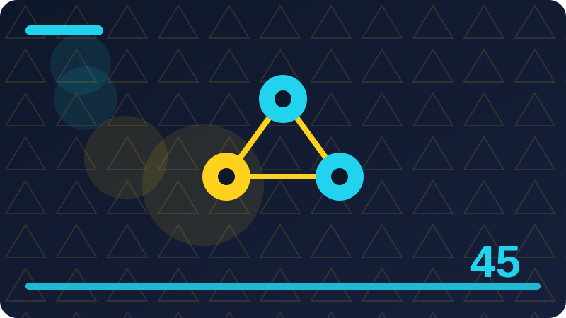

Chapter 45: AI Careers and Portfolio in Plain Words

Section 1: AI Careers in Plain Words
Many beginners meet ai careers in plain words through headlines, adverts, or a single impressive demo, and those sources tend to show only the best result. This section shows the ordinary middle of the work instead: the trying, the choosing, the fixing, and the checking. That middle is where skill actually grows, and it is the part you can practise today with nothing more than your own computer and your own files.
One key idea about ai careers in plain words is this: an AI career is not one job but a family of jobs, from building tools, to testing them, to explaining them, to keeping their data safe. If you ever feel unsure about this point, return to a concrete example rather than an abstract argument. One real, small, local example usually clears up more confusion than ten general claims.
One key idea about ai careers in plain words is this: the common thread is solving real problems with data, programs, and careful checking, rather than knowing a particular fashionable tool. Try it with a tiny example of your own before you trust it on a bigger task. Small tests reveal big misunderstandings cheaply, and that cheap lesson is one of the best gifts of working locally.
One key idea about ai careers in plain words is this: this chapter maps that family honestly, so you can choose a direction that fits your skills, your interests, and your life. If you ever feel unsure about this point, return to a concrete example rather than an abstract argument. One real, small, local example usually clears up more confusion than ten general claims.
The small program below lets you try a toy version of this idea on your own machine, using only the Python standard library and your own words. Run it, read the output, then change one list item or one value and run it again, so you can see exactly what each part contributes to the result.
A good habit here is to work in small rounds. Make one attempt, look at it honestly, change one thing, and compare the new result with the old one. People who change five things at once often cannot tell which change helped, and they end up repeating the same mistake. Small rounds feel slower, but they teach you faster, and they leave you with notes you can actually reuse next time.
As you finish this section, ask yourself one honest question: could you explain this idea without the tool in front of you? If the answer is yes, you have genuinely learned something. If the answer is not yet, that is fine too: reread the example, run the code once more, and try the Check question in your own words before moving on. Employers trust evidence over adjectives, so every claim in your portfolio should point at a project, a file, or a result they can inspect. Honesty is a career asset, not a weakness: a portfolio that says exactly what you did, and what you did not, earns trust that exaggeration destroys.
# A tiny portfolio list: projects you actually built, in your own words.
projects = ["local note summariser", "local file search tool", "study quiz program"]
for project in projects:
print("-", project)Check: When would ai careers in plain words be genuinely helpful, and when would a simpler human-only approach be better?
Section 2: Jobs That Build AI Tools
Let us take jobs that build ai tools slowly and carefully, because ideas that look simple on the surface often hide a useful distinction underneath. In this section you will meet that distinction, see it in a small local example, and learn the habit that keeps you in control of the tool instead of the other way round. Read with a notebook nearby if you can, and pause whenever an example reminds you of something you have tried yourself.
One key idea about jobs that build ai tools is this: tool builders design, write, and test programs that use models, data, and rules to do useful work for real users. Notice how this point connects to the sections around it. Ideas in this book build on each other, and a point that seems small here often becomes the key to a harder problem later.
One key idea about jobs that build ai tools is this: the daily work is less glamorous than announcements suggest: reading requirements, writing small programs, testing, fixing, and documenting. Notice how this point connects to the sections around it. Ideas in this book build on each other, and a point that seems small here often becomes the key to a harder problem later.
One key idea about jobs that build ai tools is this: the reward is concrete: a tool that works, that people use, and that you can explain and improve, which is exactly what this book teaches. If you ever feel unsure about this point, return to a concrete example rather than an abstract argument. One real, small, local example usually clears up more confusion than ten general claims.
The small program below lets you try a toy version of this idea on your own machine, using only the Python standard library and your own words. Run it, read the output, then change one list item or one value and run it again, so you can see exactly what each part contributes to the result.
It also helps to set a clear finish line before you start. Decide what good enough looks like, how many rounds you will try, and when you will stop and ask a real person for feedback. Without a finish line, tools that can generate endlessly will keep you generating endlessly, and the work never gets finished, shared, or learned from. Limits are not the enemy of good work; they are part of it.
Keep this section as a reference, not a rulebook. Different projects will need different choices, and part of growing skill is learning when to follow a guideline and when to adapt it with good reason. What should not change is the core habit: know what you asked for, look carefully at what you got, and take responsibility for what you keep. Honesty is a career asset, not a weakness: a portfolio that says exactly what you did, and what you did not, earns trust that exaggeration destroys.
def skill_level(hours, projects_done):
if projects_done >= 3 and hours >= 50:
return "ready to show"
return "still building"
print(skill_level(60, 3))Check: How would you explain jobs that build ai tools to a friend who has never used an AI tool?
Section 3: Jobs That Test and Check AI
This section introduces jobs that test and check ai in plain words, one idea at a time. You will not be asked to trust any big claim, and you will not need any paid service or outside account. Everything here runs locally, with small toy examples, so you can test each idea yourself, change one thing, run it again, and watch what changes.
One key idea about jobs that test and check ai is this: testers and evaluators check whether AI systems work correctly, fairly, and safely, by designing tests, probing edge cases, and reporting failures. If you ever feel unsure about this point, return to a concrete example rather than an abstract argument. One real, small, local example usually clears up more confusion than ten general claims.
One key idea about jobs that test and check ai is this: this work suits careful, curious people, because finding a failure before users do is a genuine and valuable skill. That matters because it changes what you should do next, not just what you believe. When you can name the effect, you can plan around it instead of being surprised by it.
One key idea about jobs that test and check ai is this: evaluation is also a growing field, because every organisation that uses AI needs someone trustworthy to check it. A beginner who understands this point will make better choices than an expert who ignores it, because most mistakes here come from rushing, not from lack of talent.
The small program below lets you try a toy version of this idea on your own machine, using only the Python standard library and your own words. Run it, read the output, then change one list item or one value and run it again, so you can see exactly what each part contributes to the result.
A good habit here is to work in small rounds. Make one attempt, look at it honestly, change one thing, and compare the new result with the old one. People who change five things at once often cannot tell which change helped, and they end up repeating the same mistake. Small rounds feel slower, but they teach you faster, and they leave you with notes you can actually reuse next time.
Before you move on, try the small code example in this section on your own machine, change one value, and run it again. Notice what stays the same and what changes, and write one sentence about what you learned. That single sentence is worth more than reading the section twice, because it proves the idea in your own words. Build in public slowly, with notes about what you learned, and over a year that record becomes more persuasive than any single application. A career is built by repeated, visible, useful work, not by one dramatic break, so prefer steady building to waiting for a perfect opportunity. Keep your portfolio small enough to maintain: three excellent, finished projects beat twenty half-finished ones that you cannot explain or run.
import datetime
# A simple learning record: date, topic, and what you built.
record = [("2026-10-31", "local tools", "note summariser")]
for date, topic, built in record:
print(date, "|", topic, "| built:", built)Check: Give a small local example of jobs that test and check ai from your own files or ideas, and say what you would check before keeping it.
Section 4: Jobs Around Data
Many beginners meet jobs around data through headlines, adverts, or a single impressive demo, and those sources tend to show only the best result. This section shows the ordinary middle of the work instead: the trying, the choosing, the fixing, and the checking. That middle is where skill actually grows, and it is the part you can practise today with nothing more than your own computer and your own files.
One key idea about jobs around data is this: data roles collect, clean, organise, and explain data, so that models and decisions rest on material that is accurate and lawful. A beginner who understands this point will make better choices than an expert who ignores it, because most mistakes here come from rushing, not from lack of talent.
One key idea about jobs around data is this: clean data work is unglamorous and essential: most failed AI projects fail on data quality long before they fail on modelling. A beginner who understands this point will make better choices than an expert who ignores it, because most mistakes here come from rushing, not from lack of talent.
One key idea about jobs around data is this: if you enjoy order, detail, and honesty about limits, data work may suit you better than the more publicised modelling roles. Notice how this point connects to the sections around it. Ideas in this book build on each other, and a point that seems small here often becomes the key to a harder problem later.
The small program below lets you try a toy version of this idea on your own machine, using only the Python standard library and your own words. Run it, read the output, then change one list item or one value and run it again, so you can see exactly what each part contributes to the result.
It also helps to set a clear finish line before you start. Decide what good enough looks like, how many rounds you will try, and when you will stop and ask a real person for feedback. Without a finish line, tools that can generate endlessly will keep you generating endlessly, and the work never gets finished, shared, or learned from. Limits are not the enemy of good work; they are part of it.
The main point to carry forward is a simple one: stay the person who decides. Use the tool to widen your choices, to draft faster, or to test an idea, and then bring your own judgment back to the centre. Tools change quickly, but that habit of deciding, checking, and owning the result will serve you in every tool you meet next. A career is built by repeated, visible, useful work, not by one dramatic break, so prefer steady building to waiting for a perfect opportunity. Keep your portfolio small enough to maintain: three excellent, finished projects beat twenty half-finished ones that you cannot explain or run. When you apply for a role, reshape the same honest evidence for that role, rather than inventing new evidence to fit the job description.
def cv_line(role, skill, proof):
return role + ": " + skill + " (proof: " + proof + ")"
print(cv_line("AI tool builder", "Python, standard library", "local search tool"))Check: When would jobs around data be genuinely helpful, and when would a simpler human-only approach be better?
Section 5: Jobs That Explain and Support AI
Let us take jobs that explain and support ai slowly and carefully, because ideas that look simple on the surface often hide a useful distinction underneath. In this section you will meet that distinction, see it in a small local example, and learn the habit that keeps you in control of the tool instead of the other way round. Read with a notebook nearby if you can, and pause whenever an example reminds you of something you have tried yourself.
One key idea about jobs that explain and support ai is this: explainer roles write documentation, teach users, support customers, and translate between technical teams and the people who use their tools. That matters because it changes what you should do next, not just what you believe. When you can name the effect, you can plan around it instead of being surprised by it.
One key idea about jobs that explain and support ai is this: these roles matter because a tool nobody understands will not be used well, however clever its engineering. Notice how this point connects to the sections around it. Ideas in this book build on each other, and a point that seems small here often becomes the key to a harder problem later.
One key idea about jobs that explain and support ai is this: clear writing, patience, and empathy are the core skills here, and they are rarer, and more valuable, than they are often given credit for. Try it with a tiny example of your own before you trust it on a bigger task. Small tests reveal big misunderstandings cheaply, and that cheap lesson is one of the best gifts of working locally.
The small program below lets you try a toy version of this idea on your own machine, using only the Python standard library and your own words. Run it, read the output, then change one list item or one value and run it again, so you can see exactly what each part contributes to the result.
A good habit here is to work in small rounds. Make one attempt, look at it honestly, change one thing, and compare the new result with the old one. People who change five things at once often cannot tell which change helped, and they end up repeating the same mistake. Small rounds feel slower, but they teach you faster, and they leave you with notes you can actually reuse next time.
If one idea from this section sticks, let it be this: slow, honest checking beats fast, careless output every time. Speed feels impressive in the moment, but checked work is the work people trust, reuse, and remember. Build the checking habit now, while your projects are small, and it will already be strong when your projects grow. Keep your portfolio small enough to maintain: three excellent, finished projects beat twenty half-finished ones that you cannot explain or run. When you apply for a role, reshape the same honest evidence for that role, rather than inventing new evidence to fit the job description.
# Sorting portfolio pieces by the skill each one proves.
pieces = {"search tool": "retrieval", "quiz program": "testing", "summariser": "text handling"}
for piece, skill in pieces.items():
print(piece, "proves", skill)Check: How would you explain jobs that explain and support ai to a friend who has never used an AI tool?
Section 6: What Employers Actually Look For
This section introduces what employers actually look for in plain words, one idea at a time. You will not be asked to trust any big claim, and you will not need any paid service or outside account. Everything here runs locally, with small toy examples, so you can test each idea yourself, change one thing, run it again, and watch what changes.
One key idea about what employers actually look for is this: employers look for evidence that you can do the job: finished work, clear explanations, reliable habits, and the ability to learn. Try it with a tiny example of your own before you trust it on a bigger task. Small tests reveal big misunderstandings cheaply, and that cheap lesson is one of the best gifts of working locally.
One key idea about what employers actually look for is this: certificates help only when they point at real skill, because a hiring manager will test your work in conversation, in tasks, or both. Notice how this point connects to the sections around it. Ideas in this book build on each other, and a point that seems small here often becomes the key to a harder problem later.
One key idea about what employers actually look for is this: the strongest signal is a small portfolio of finished, honest projects that you can walk through step by step without notes. Try it with a tiny example of your own before you trust it on a bigger task. Small tests reveal big misunderstandings cheaply, and that cheap lesson is one of the best gifts of working locally.
The small program below lets you try a toy version of this idea on your own machine, using only the Python standard library and your own words. Run it, read the output, then change one list item or one value and run it again, so you can see exactly what each part contributes to the result.
It also helps to set a clear finish line before you start. Decide what good enough looks like, how many rounds you will try, and when you will stop and ask a real person for feedback. Without a finish line, tools that can generate endlessly will keep you generating endlessly, and the work never gets finished, shared, or learned from. Limits are not the enemy of good work; they are part of it.
You do not need to master everything in this section today. Pick the one idea that felt most useful, try it in a tiny example of your own, and keep the rest as a map for later. Learning works best in layers: a first pass for the shape of the idea, a second pass when you actually need it, and real practice in between. When you apply for a role, reshape the same honest evidence for that role, rather than inventing new evidence to fit the job description. Rejection is information, not a verdict on your worth: it often means fit, timing, or competition, and the right response is to improve one thing and apply again.
def honest_claim(claim, evidence):
if evidence:
return "Claim: " + claim + " | Evidence: " + evidence
return "Claim needs evidence: " + claim
print(honest_claim("I build local AI tools", "three finished toy programs"))Check: Give a small local example of what employers actually look for from your own files or ideas, and say what you would check before keeping it.
Section 7: Skills That Travel Between Roles
Many beginners meet skills that travel between roles through headlines, adverts, or a single impressive demo, and those sources tend to show only the best result. This section shows the ordinary middle of the work instead: the trying, the choosing, the fixing, and the checking. That middle is where skill actually grows, and it is the part you can practise today with nothing more than your own computer and your own files.
One key idea about skills that travel between roles is this: travelling skills include clear writing, careful testing, honest estimation, patient debugging, and the ability to learn a new tool by building with it. Notice how this point connects to the sections around it. Ideas in this book build on each other, and a point that seems small here often becomes the key to a harder problem later.
One key idea about skills that travel between roles is this: these skills matter in every AI role, because tools change yearly while the need for clear, tested, honest work never changes. If you ever feel unsure about this point, return to a concrete example rather than an abstract argument. One real, small, local example usually clears up more confusion than ten general claims.
One key idea about skills that travel between roles is this: invest in travelling skills deliberately, and you will survive every hype cycle with your employability intact. If you ever feel unsure about this point, return to a concrete example rather than an abstract argument. One real, small, local example usually clears up more confusion than ten general claims.
The small program below lets you try a toy version of this idea on your own machine, using only the Python standard library and your own words. Run it, read the output, then change one list item or one value and run it again, so you can see exactly what each part contributes to the result.
A good habit here is to work in small rounds. Make one attempt, look at it honestly, change one thing, and compare the new result with the old one. People who change five things at once often cannot tell which change helped, and they end up repeating the same mistake. Small rounds feel slower, but they teach you faster, and they leave you with notes you can actually reuse next time.
As you finish this section, ask yourself one honest question: could you explain this idea without the tool in front of you? If the answer is yes, you have genuinely learned something. If the answer is not yet, that is fine too: reread the example, run the code once more, and try the Check question in your own words before moving on. Rejection is information, not a verdict on your worth: it often means fit, timing, or competition, and the right response is to improve one thing and apply again. Learn the tools your target roles actually use, but learn them by building, because a tutorial watched is not a skill an employer can use.
import os
# Checking your portfolio folder: what is actually finished and present?
for name in sorted(os.listdir(".")):
if name.endswith(".py"):
print("finished program:", name)Check: When would skills that travel between roles be genuinely helpful, and when would a simpler human-only approach be better?
Section 8: Learning Paths Without Debt or Hype
Let us take learning paths without debt or hype slowly and carefully, because ideas that look simple on the surface often hide a useful distinction underneath. In this section you will meet that distinction, see it in a small local example, and learn the habit that keeps you in control of the tool instead of the other way round. Read with a notebook nearby if you can, and pause whenever an example reminds you of something you have tried yourself.
One key idea about learning paths without debt or hype is this: a learning path without hype starts from free or cheap foundations, builds small projects, and adds depth only where a real goal demands it. In practice, this is the difference between using a tool well and being used by it. The careful user notices the effect early, while the careless user only notices it after the work is already shared.
One key idea about learning paths without debt or hype is this: avoid courses that promise a job, a salary, or mastery in days, because real skill takes weeks of practice, and honest courses say so. Notice how this point connects to the sections around it. Ideas in this book build on each other, and a point that seems small here often becomes the key to a harder problem later.
One key idea about learning paths without debt or hype is this: this book's path is an example: standard library Python, local toys, honest testing, and a finished portfolio, all without paid services. Notice how this point connects to the sections around it. Ideas in this book build on each other, and a point that seems small here often becomes the key to a harder problem later.
The small program below lets you try a toy version of this idea on your own machine, using only the Python standard library and your own words. Run it, read the output, then change one list item or one value and run it again, so you can see exactly what each part contributes to the result.
It also helps to set a clear finish line before you start. Decide what good enough looks like, how many rounds you will try, and when you will stop and ask a real person for feedback. Without a finish line, tools that can generate endlessly will keep you generating endlessly, and the work never gets finished, shared, or learned from. Limits are not the enemy of good work; they are part of it.
Keep this section as a reference, not a rulebook. Different projects will need different choices, and part of growing skill is learning when to follow a guideline and when to adapt it with good reason. What should not change is the core habit: know what you asked for, look carefully at what you got, and take responsibility for what you keep. Learn the tools your target roles actually use, but learn them by building, because a tutorial watched is not a skill an employer can use.
def weekly_goal(hours_planned, hours_done):
if hours_done >= hours_planned:
return "Goal met. Note what you built."
return "Goal missed by " + str(hours_planned - hours_done) + " hours. Shrink next week."
print(weekly_goal(5, 5))Check: How would you explain learning paths without debt or hype to a friend who has never used an AI tool?
Section 9: Certificates: What They Prove and What They Do Not
This section introduces certificates: what they prove and what they do not in plain words, one idea at a time. You will not be asked to trust any big claim, and you will not need any paid service or outside account. Everything here runs locally, with small toy examples, so you can test each idea yourself, change one thing, run it again, and watch what changes.
One key idea about certificates: what they prove and what they do not is this: a certificate proves you completed a course, not that you can do the job, and employers know the difference. A beginner who understands this point will make better choices than an expert who ignores it, because most mistakes here come from rushing, not from lack of talent.
One key idea about certificates: what they prove and what they do not is this: certificates are most useful when they accompany a portfolio, because the portfolio proves the skill the certificate merely claims. Notice how this point connects to the sections around it. Ideas in this book build on each other, and a point that seems small here often becomes the key to a harder problem later.
One key idea about certificates: what they prove and what they do not is this: choose certificates that require real work, keep the projects you made during them, and never let a certificate replace building. If you ever feel unsure about this point, return to a concrete example rather than an abstract argument. One real, small, local example usually clears up more confusion than ten general claims.
The small program below lets you try a toy version of this idea on your own machine, using only the Python standard library and your own words. Run it, read the output, then change one list item or one value and run it again, so you can see exactly what each part contributes to the result.
A good habit here is to work in small rounds. Make one attempt, look at it honestly, change one thing, and compare the new result with the old one. People who change five things at once often cannot tell which change helped, and they end up repeating the same mistake. Small rounds feel slower, but they teach you faster, and they leave you with notes you can actually reuse next time.
Before you move on, try the small code example in this section on your own machine, change one value, and run it again. Notice what stays the same and what changes, and write one sentence about what you learned. That single sentence is worth more than reading the section twice, because it proves the idea in your own words. Your local projects from this book are legitimate portfolio pieces, because they are real, runnable, explainable, and entirely your own work. Write about your projects in plain language, because the person reading your portfolio may not be technical, and clarity is itself a professional skill.
# A tiny interview practice list: questions you can answer with a story.
questions = ["Tell me about a tool you built.",
"What problem did it solve?",
"What would you improve next?"]
for question in questions:
print("Practise:", question)Check: Give a small local example of certificates: what they prove and what they do not from your own files or ideas, and say what you would check before keeping it.
Section 10: Your First Portfolio: Start Where You Are
Many beginners meet your first portfolio: start where you are through headlines, adverts, or a single impressive demo, and those sources tend to show only the best result. This section shows the ordinary middle of the work instead: the trying, the choosing, the fixing, and the checking. That middle is where skill actually grows, and it is the part you can practise today with nothing more than your own computer and your own files.
One key idea about your first portfolio: start where you are is this: your first portfolio starts with what you already have: the local tools from this book, honestly described, with code a reader can run. A beginner who understands this point will make better choices than an expert who ignores it, because most mistakes here come from rushing, not from lack of talent.
One key idea about your first portfolio: start where you are is this: a portfolio does not need to be large to be convincing: three finished pieces, each with a purpose, a result, and a lesson, are enough to start. A beginner who understands this point will make better choices than an expert who ignores it, because most mistakes here come from rushing, not from lack of talent.
One key idea about your first portfolio: start where you are is this: start today, with one page describing one project well, and let the portfolio grow as your skills grow, instead of waiting for perfection. If you ever feel unsure about this point, return to a concrete example rather than an abstract argument. One real, small, local example usually clears up more confusion than ten general claims.
The small program below lets you try a toy version of this idea on your own machine, using only the Python standard library and your own words. Run it, read the output, then change one list item or one value and run it again, so you can see exactly what each part contributes to the result.
It also helps to set a clear finish line before you start. Decide what good enough looks like, how many rounds you will try, and when you will stop and ask a real person for feedback. Without a finish line, tools that can generate endlessly will keep you generating endlessly, and the work never gets finished, shared, or learned from. Limits are not the enemy of good work; they are part of it.
The main point to carry forward is a simple one: stay the person who decides. Use the tool to widen your choices, to draft faster, or to test an idea, and then bring your own judgment back to the centre. Tools change quickly, but that habit of deciding, checking, and owning the result will serve you in every tool you meet next. Write about your projects in plain language, because the person reading your portfolio may not be technical, and clarity is itself a professional skill. Networking, at its best, is simply helping people and staying in touch, not collecting contacts, and it grows naturally from shared, honest work.
def project_summary(name, problem, result):
return name + " solved " + problem + " and the result was " + result + "."
print(project_summary("Local search tool", "finding notes quickly", "search in seconds"))Check: When would your first portfolio: start where you are be genuinely helpful, and when would a simpler human-only approach be better?
Section 11: Choosing Portfolio Projects Wisely
Let us take choosing portfolio projects wisely slowly and carefully, because ideas that look simple on the surface often hide a useful distinction underneath. In this section you will meet that distinction, see it in a small local example, and learn the habit that keeps you in control of the tool instead of the other way round. Read with a notebook nearby if you can, and pause whenever an example reminds you of something you have tried yourself.
One key idea about choosing portfolio projects wisely is this: choose projects that show the skills your target roles need, that solve a real problem, and that you can explain without exaggeration. Notice how this point connects to the sections around it. Ideas in this book build on each other, and a point that seems small here often becomes the key to a harder problem later.
One key idea about choosing portfolio projects wisely is this: a project that solved your own problem is ideal, because your motivation, your testing, and your story about it will all be genuine. If you ever feel unsure about this point, return to a concrete example rather than an abstract argument. One real, small, local example usually clears up more confusion than ten general claims.
One key idea about choosing portfolio projects wisely is this: avoid copying tutorial projects unchanged, because a portfolio of copies proves you can follow instructions, not that you can build. A beginner who understands this point will make better choices than an expert who ignores it, because most mistakes here come from rushing, not from lack of talent.
The small program below lets you try a toy version of this idea on your own machine, using only the Python standard library and your own words. Run it, read the output, then change one list item or one value and run it again, so you can see exactly what each part contributes to the result.
A good habit here is to work in small rounds. Make one attempt, look at it honestly, change one thing, and compare the new result with the old one. People who change five things at once often cannot tell which change helped, and they end up repeating the same mistake. Small rounds feel slower, but they teach you faster, and they leave you with notes you can actually reuse next time.
If one idea from this section sticks, let it be this: slow, honest checking beats fast, careless output every time. Speed feels impressive in the moment, but checked work is the work people trust, reuse, and remember. Build the checking habit now, while your projects are small, and it will already be strong when your projects grow. Networking, at its best, is simply helping people and staying in touch, not collecting contacts, and it grows naturally from shared, honest work. Keep learning after you get a role, because the field moves, and the habits in this book are the habits that keep a career moving with it.
# A tiny portfolio list: projects you actually built, in your own words.
projects = ["local note summariser", "local file search tool", "study quiz program"]
for project in projects:
print("-", project)Check: How would you explain choosing portfolio projects wisely to a friend who has never used an AI tool?
Section 12: Describing a Project Honestly
This section introduces describing a project honestly in plain words, one idea at a time. You will not be asked to trust any big claim, and you will not need any paid service or outside account. Everything here runs locally, with small toy examples, so you can test each idea yourself, change one thing, run it again, and watch what changes.
One key idea about describing a project honestly is this: an honest project description names the problem, what you built, how it works, what it achieved, and what you would improve next. A beginner who understands this point will make better choices than an expert who ignores it, because most mistakes here come from rushing, not from lack of talent.
One key idea about describing a project honestly is this: honesty includes limits: stating what the project does not do shows judgment, while hiding limits invites a question you cannot answer well. Notice how this point connects to the sections around it. Ideas in this book build on each other, and a point that seems small here often becomes the key to a harder problem later.
One key idea about describing a project honestly is this: write the description for a non-technical reader first, and add technical detail second, so both audiences can follow it. That matters because it changes what you should do next, not just what you believe. When you can name the effect, you can plan around it instead of being surprised by it.
The small program below lets you try a toy version of this idea on your own machine, using only the Python standard library and your own words. Run it, read the output, then change one list item or one value and run it again, so you can see exactly what each part contributes to the result.
It also helps to set a clear finish line before you start. Decide what good enough looks like, how many rounds you will try, and when you will stop and ask a real person for feedback. Without a finish line, tools that can generate endlessly will keep you generating endlessly, and the work never gets finished, shared, or learned from. Limits are not the enemy of good work; they are part of it.
You do not need to master everything in this section today. Pick the one idea that felt most useful, try it in a tiny example of your own, and keep the rest as a map for later. Learning works best in layers: a first pass for the shape of the idea, a second pass when you actually need it, and real practice in between. Keep learning after you get a role, because the field moves, and the habits in this book are the habits that keep a career moving with it. A good reputation is built slowly and lost quickly, so protect it with honest claims, finished work, and respectful communication in every interaction.
def skill_level(hours, projects_done):
if projects_done >= 3 and hours >= 50:
return "ready to show"
return "still building"
print(skill_level(60, 3))Check: Give a small local example of describing a project honestly from your own files or ideas, and say what you would check before keeping it.
Section 13: Code a Stranger Can Run
Many beginners meet code a stranger can run through headlines, adverts, or a single impressive demo, and those sources tend to show only the best result. This section shows the ordinary middle of the work instead: the trying, the choosing, the fixing, and the checking. That middle is where skill actually grows, and it is the part you can practise today with nothing more than your own computer and your own files.
One key idea about code a stranger can run is this: portfolio code should run on a stranger's machine with clear instructions, no hidden steps, and no paid services or secret keys. Notice how this point connects to the sections around it. Ideas in this book build on each other, and a point that seems small here often becomes the key to a harder problem later.
One key idea about code a stranger can run is this: test that claim by asking a friend, or a fresh folder on your own machine, to follow your instructions exactly and run the project. Notice how this point connects to the sections around it. Ideas in this book build on each other, and a point that seems small here often becomes the key to a harder problem later.
One key idea about code a stranger can run is this: every failure in that test is a gift, because it shows you the missing step before an employer finds it. Notice how this point connects to the sections around it. Ideas in this book build on each other, and a point that seems small here often becomes the key to a harder problem later.
The small program below lets you try a toy version of this idea on your own machine, using only the Python standard library and your own words. Run it, read the output, then change one list item or one value and run it again, so you can see exactly what each part contributes to the result.
A good habit here is to work in small rounds. Make one attempt, look at it honestly, change one thing, and compare the new result with the old one. People who change five things at once often cannot tell which change helped, and they end up repeating the same mistake. Small rounds feel slower, but they teach you faster, and they leave you with notes you can actually reuse next time.
As you finish this section, ask yourself one honest question: could you explain this idea without the tool in front of you? If the answer is yes, you have genuinely learned something. If the answer is not yet, that is fine too: reread the example, run the code once more, and try the Check question in your own words before moving on. A good reputation is built slowly and lost quickly, so protect it with honest claims, finished work, and respectful communication in every interaction. If a job posting asks for something you cannot honestly claim, either learn it properly or skip the posting, because a false claim fails at the first real task.
import datetime
# A simple learning record: date, topic, and what you built.
record = [("2026-10-31", "local tools", "note summariser")]
for date, topic, built in record:
print(date, "|", topic, "| built:", built)Check: When would code a stranger can run be genuinely helpful, and when would a simpler human-only approach be better?
Section 14: Writing About Your Work Clearly
Let us take writing about your work clearly slowly and carefully, because ideas that look simple on the surface often hide a useful distinction underneath. In this section you will meet that distinction, see it in a small local example, and learn the habit that keeps you in control of the tool instead of the other way round. Read with a notebook nearby if you can, and pause whenever an example reminds you of something you have tried yourself.
One key idea about writing about your work clearly is this: clear writing about your work is a professional skill, not decoration, because it is how employers, clients, and collaborators first judge you. Notice how this point connects to the sections around it. Ideas in this book build on each other, and a point that seems small here often becomes the key to a harder problem later.
One key idea about writing about your work clearly is this: write in short sentences, plain words, and a logical order: problem, approach, result, lesson, and next improvement. Notice how this point connects to the sections around it. Ideas in this book build on each other, and a point that seems small here often becomes the key to a harder problem later.
One key idea about writing about your work clearly is this: read your writing aloud before you publish it, and cut every sentence that does not help the reader understand the work. If you ever feel unsure about this point, return to a concrete example rather than an abstract argument. One real, small, local example usually clears up more confusion than ten general claims.
The small program below lets you try a toy version of this idea on your own machine, using only the Python standard library and your own words. Run it, read the output, then change one list item or one value and run it again, so you can see exactly what each part contributes to the result.
It also helps to set a clear finish line before you start. Decide what good enough looks like, how many rounds you will try, and when you will stop and ask a real person for feedback. Without a finish line, tools that can generate endlessly will keep you generating endlessly, and the work never gets finished, shared, or learned from. Limits are not the enemy of good work; they are part of it.
Keep this section as a reference, not a rulebook. Different projects will need different choices, and part of growing skill is learning when to follow a guideline and when to adapt it with good reason. What should not change is the core habit: know what you asked for, look carefully at what you got, and take responsibility for what you keep. If a job posting asks for something you cannot honestly claim, either learn it properly or skip the posting, because a false claim fails at the first real task.
def cv_line(role, skill, proof):
return role + ": " + skill + " (proof: " + proof + ")"
print(cv_line("AI tool builder", "Python, standard library", "local search tool"))Check: How would you explain writing about your work clearly to a friend who has never used an AI tool?
Section 15: Showing Your Thinking, Not Just Results
This section introduces showing your thinking, not just results in plain words, one idea at a time. You will not be asked to trust any big claim, and you will not need any paid service or outside account. Everything here runs locally, with small toy examples, so you can test each idea yourself, change one thing, run it again, and watch what changes.
One key idea about showing your thinking, not just results is this: showing your thinking means sharing your notes, your test results, your mistakes, and the reasons behind your choices. That matters because it changes what you should do next, not just what you believe. When you can name the effect, you can plan around it instead of being surprised by it.
One key idea about showing your thinking, not just results is this: a result alone can be copied or faked, but a visible trail of thinking proves the skill behind the result in a way no claim can. In practice, this is the difference between using a tool well and being used by it. The careful user notices the effect early, while the careless user only notices it after the work is already shared.
One key idea about showing your thinking, not just results is this: keep a short build log for each project, and publish the interesting parts, including the parts where you changed direction. That matters because it changes what you should do next, not just what you believe. When you can name the effect, you can plan around it instead of being surprised by it.
The small program below lets you try a toy version of this idea on your own machine, using only the Python standard library and your own words. Run it, read the output, then change one list item or one value and run it again, so you can see exactly what each part contributes to the result.
A good habit here is to work in small rounds. Make one attempt, look at it honestly, change one thing, and compare the new result with the old one. People who change five things at once often cannot tell which change helped, and they end up repeating the same mistake. Small rounds feel slower, but they teach you faster, and they leave you with notes you can actually reuse next time.
Before you move on, try the small code example in this section on your own machine, change one value, and run it again. Notice what stays the same and what changes, and write one sentence about what you learned. That single sentence is worth more than reading the section twice, because it proves the idea in your own words. Document your learning journey as you go, since a dated record of projects, mistakes, and improvements is convincing in a way a polished summary never is. Ask for feedback on your portfolio from people who hire or who do the work, because their view of what matters is the view that counts.
# Sorting portfolio pieces by the skill each one proves.
pieces = {"search tool": "retrieval", "quiz program": "testing", "summariser": "text handling"}
for piece, skill in pieces.items():
print(piece, "proves", skill)Check: Give a small local example of showing your thinking, not just results from your own files or ideas, and say what you would check before keeping it.
Section 16: The Difference Between Real and Fake Portfolios
Many beginners meet the difference between real and fake portfolios through headlines, adverts, or a single impressive demo, and those sources tend to show only the best result. This section shows the ordinary middle of the work instead: the trying, the choosing, the fixing, and the checking. That middle is where skill actually grows, and it is the part you can practise today with nothing more than your own computer and your own files.
One key idea about the difference between real and fake portfolios is this: a real portfolio contains work you did, can run, and can explain, while a fake one contains copied, exaggerated, or invented work. Try it with a tiny example of your own before you trust it on a bigger task. Small tests reveal big misunderstandings cheaply, and that cheap lesson is one of the best gifts of working locally.
One key idea about the difference between real and fake portfolios is this: fake portfolios fail at the first serious conversation, because questions about choices, failures, and details expose what was never built. Try it with a tiny example of your own before you trust it on a bigger task. Small tests reveal big misunderstandings cheaply, and that cheap lesson is one of the best gifts of working locally.
One key idea about the difference between real and fake portfolios is this: the short-term gain of a fake portfolio is never worth the long-term damage to your reputation when the truth appears, as it usually does. If you ever feel unsure about this point, return to a concrete example rather than an abstract argument. One real, small, local example usually clears up more confusion than ten general claims.
The small program below lets you try a toy version of this idea on your own machine, using only the Python standard library and your own words. Run it, read the output, then change one list item or one value and run it again, so you can see exactly what each part contributes to the result.
It also helps to set a clear finish line before you start. Decide what good enough looks like, how many rounds you will try, and when you will stop and ask a real person for feedback. Without a finish line, tools that can generate endlessly will keep you generating endlessly, and the work never gets finished, shared, or learned from. Limits are not the enemy of good work; they are part of it.
The main point to carry forward is a simple one: stay the person who decides. Use the tool to widen your choices, to draft faster, or to test an idea, and then bring your own judgment back to the centre. Tools change quickly, but that habit of deciding, checking, and owning the result will serve you in every tool you meet next. Ask for feedback on your portfolio from people who hire or who do the work, because their view of what matters is the view that counts.
def honest_claim(claim, evidence):
if evidence:
return "Claim: " + claim + " | Evidence: " + evidence
return "Claim needs evidence: " + claim
print(honest_claim("I build local AI tools", "three finished toy programs"))Check: When would the difference between real and fake portfolios be genuinely helpful, and when would a simpler human-only approach be better?
Section 17: Never Fabricate Work for an Application
Let us take never fabricate work for an application slowly and carefully, because ideas that look simple on the surface often hide a useful distinction underneath. In this section you will meet that distinction, see it in a small local example, and learn the habit that keeps you in control of the tool instead of the other way round. Read with a notebook nearby if you can, and pause whenever an example reminds you of something you have tried yourself.
One key idea about never fabricate work for an application is this: fabricating work for an application means claiming projects, skills, or experience you do not have, and it is dishonest even when it feels tempting. That matters because it changes what you should do next, not just what you believe. When you can name the effect, you can plan around it instead of being surprised by it.
One key idea about never fabricate work for an application is this: fabrication also harms you directly, because a role gained by false claims places you in work you cannot do, under scrutiny you cannot survive. Notice how this point connects to the sections around it. Ideas in this book build on each other, and a point that seems small here often becomes the key to a harder problem later.
One key idea about never fabricate work for an application is this: the honest alternative is to build the missing skill properly, with small projects, and to apply when the evidence is real, even if that takes longer. A beginner who understands this point will make better choices than an expert who ignores it, because most mistakes here come from rushing, not from lack of talent.
The small program below lets you try a toy version of this idea on your own machine, using only the Python standard library and your own words. Run it, read the output, then change one list item or one value and run it again, so you can see exactly what each part contributes to the result.
A good habit here is to work in small rounds. Make one attempt, look at it honestly, change one thing, and compare the new result with the old one. People who change five things at once often cannot tell which change helped, and they end up repeating the same mistake. Small rounds feel slower, but they teach you faster, and they leave you with notes you can actually reuse next time.
If one idea from this section sticks, let it be this: slow, honest checking beats fast, careless output every time. Speed feels impressive in the moment, but checked work is the work people trust, reuse, and remember. Build the checking habit now, while your projects are small, and it will already be strong when your projects grow. Balance depth and breadth: one area done deeply proves you can finish hard work, while a little breadth proves you can learn new things when needed.
import os
# Checking your portfolio folder: what is actually finished and present?
for name in sorted(os.listdir(".")):
if name.endswith(".py"):
print("finished program:", name)Check: How would you explain never fabricate work for an application to a friend who has never used an AI tool?
Section 18: Open Source Contributions for Beginners
This section introduces open source contributions for beginners in plain words, one idea at a time. You will not be asked to trust any big claim, and you will not need any paid service or outside account. Everything here runs locally, with small toy examples, so you can test each idea yourself, change one thing, run it again, and watch what changes.
One key idea about open source contributions for beginners is this: open source contributions for beginners start small: fixing documentation, reporting a bug clearly, or improving a tiny, well-understood piece. Notice how this point connects to the sections around it. Ideas in this book build on each other, and a point that seems small here often becomes the key to a harder problem later.
One key idea about open source contributions for beginners is this: small contributions are respected, because they show you can read other people's code, follow a project's rules, and finish a task. In practice, this is the difference between using a tool well and being used by it. The careful user notices the effect early, while the careless user only notices it after the work is already shared.
One key idea about open source contributions for beginners is this: choose a welcoming project, read its contribution guide fully, and ask questions early, rather than submitting a large surprise change. A beginner who understands this point will make better choices than an expert who ignores it, because most mistakes here come from rushing, not from lack of talent.
The small program below lets you try a toy version of this idea on your own machine, using only the Python standard library and your own words. Run it, read the output, then change one list item or one value and run it again, so you can see exactly what each part contributes to the result.
It also helps to set a clear finish line before you start. Decide what good enough looks like, how many rounds you will try, and when you will stop and ask a real person for feedback. Without a finish line, tools that can generate endlessly will keep you generating endlessly, and the work never gets finished, shared, or learned from. Limits are not the enemy of good work; they are part of it.
You do not need to master everything in this section today. Pick the one idea that felt most useful, try it in a tiny example of your own, and keep the rest as a map for later. Learning works best in layers: a first pass for the shape of the idea, a second pass when you actually need it, and real practice in between. Take care of your health and your time while building a career, because a sustainable pace produces better work over years than a frantic sprint that burns out. Your career belongs to you, not to any platform, employer, or trend, and the skills you truly own travel with you wherever you go next.
def weekly_goal(hours_planned, hours_done):
if hours_done >= hours_planned:
return "Goal met. Note what you built."
return "Goal missed by " + str(hours_planned - hours_done) + " hours. Shrink next week."
print(weekly_goal(5, 5))Check: Give a small local example of open source contributions for beginners from your own files or ideas, and say what you would check before keeping it.
Section 19: Freelance AI Work in Plain Words
Many beginners meet freelance ai work in plain words through headlines, adverts, or a single impressive demo, and those sources tend to show only the best result. This section shows the ordinary middle of the work instead: the trying, the choosing, the fixing, and the checking. That middle is where skill actually grows, and it is the part you can practise today with nothing more than your own computer and your own files.
One key idea about freelance ai work in plain words is this: freelance AI work means finding clients with a problem, agreeing a clear deliverable, building it, and supporting it after delivery. A beginner who understands this point will make better choices than an expert who ignores it, because most mistakes here come from rushing, not from lack of talent.
One key idea about freelance ai work in plain words is this: freelancing suits people who enjoy variety and independence, but it also demands self-discipline, honest pricing, and clear communication. If you ever feel unsure about this point, return to a concrete example rather than an abstract argument. One real, small, local example usually clears up more confusion than ten general claims.
One key idea about freelance ai work in plain words is this: start freelance work with small, local, well-defined jobs for people you know, and let your reputation grow from finished work. Try it with a tiny example of your own before you trust it on a bigger task. Small tests reveal big misunderstandings cheaply, and that cheap lesson is one of the best gifts of working locally.
The small program below lets you try a toy version of this idea on your own machine, using only the Python standard library and your own words. Run it, read the output, then change one list item or one value and run it again, so you can see exactly what each part contributes to the result.
A good habit here is to work in small rounds. Make one attempt, look at it honestly, change one thing, and compare the new result with the old one. People who change five things at once often cannot tell which change helped, and they end up repeating the same mistake. Small rounds feel slower, but they teach you faster, and they leave you with notes you can actually reuse next time.
As you finish this section, ask yourself one honest question: could you explain this idea without the tool in front of you? If the answer is yes, you have genuinely learned something. If the answer is not yet, that is fine too: reread the example, run the code once more, and try the Check question in your own words before moving on. Your career belongs to you, not to any platform, employer, or trend, and the skills you truly own travel with you wherever you go next. A portfolio is not a list of certificates: it is a small collection of finished work that a stranger can run, read, and understand.
# A tiny interview practice list: questions you can answer with a story.
questions = ["Tell me about a tool you built.",
"What problem did it solve?",
"What would you improve next?"]
for question in questions:
print("Practise:", question)Check: When would freelance ai work in plain words be genuinely helpful, and when would a simpler human-only approach be better?
Section 20: Remote Work: What It Really Requires
Let us take remote work: what it really requires slowly and carefully, because ideas that look simple on the surface often hide a useful distinction underneath. In this section you will meet that distinction, see it in a small local example, and learn the habit that keeps you in control of the tool instead of the other way round. Read with a notebook nearby if you can, and pause whenever an example reminds you of something you have tried yourself.
One key idea about remote work: what it really requires is this: remote work requires written communication, reliable delivery, and self-management, because nobody watches you work and trust must be earned in writing. In practice, this is the difference between using a tool well and being used by it. The careful user notices the effect early, while the careless user only notices it after the work is already shared.
One key idea about remote work: what it really requires is this: the skills that matter remotely are the same ones this book teaches: clear notes, tested work, honest estimates, and regular updates. Try it with a tiny example of your own before you trust it on a bigger task. Small tests reveal big misunderstandings cheaply, and that cheap lesson is one of the best gifts of working locally.
One key idea about remote work: what it really requires is this: prepare for remote work by practising those habits on your own projects, so they are already strong when a remote role tests them. Try it with a tiny example of your own before you trust it on a bigger task. Small tests reveal big misunderstandings cheaply, and that cheap lesson is one of the best gifts of working locally.
The small program below lets you try a toy version of this idea on your own machine, using only the Python standard library and your own words. Run it, read the output, then change one list item or one value and run it again, so you can see exactly what each part contributes to the result.
It also helps to set a clear finish line before you start. Decide what good enough looks like, how many rounds you will try, and when you will stop and ask a real person for feedback. Without a finish line, tools that can generate endlessly will keep you generating endlessly, and the work never gets finished, shared, or learned from. Limits are not the enemy of good work; they are part of it.
Keep this section as a reference, not a rulebook. Different projects will need different choices, and part of growing skill is learning when to follow a guideline and when to adapt it with good reason. What should not change is the core habit: know what you asked for, look carefully at what you got, and take responsibility for what you keep. A portfolio is not a list of certificates: it is a small collection of finished work that a stranger can run, read, and understand.
def project_summary(name, problem, result):
return name + " solved " + problem + " and the result was " + result + "."
print(project_summary("Local search tool", "finding notes quickly", "search in seconds"))Check: How would you explain remote work: what it really requires to a friend who has never used an AI tool?
Section 21: Applying for Jobs Honestly
This section introduces applying for jobs honestly in plain words, one idea at a time. You will not be asked to trust any big claim, and you will not need any paid service or outside account. Everything here runs locally, with small toy examples, so you can test each idea yourself, change one thing, run it again, and watch what changes.
One key idea about applying for jobs honestly is this: applying honestly means tailoring your application to the role, using only true claims, and showing the most relevant evidence first. Try it with a tiny example of your own before you trust it on a bigger task. Small tests reveal big misunderstandings cheaply, and that cheap lesson is one of the best gifts of working locally.
One key idea about applying for jobs honestly is this: tailoring is not inventing: it is choosing, from your real experience, the parts that best match the job, and explaining the match clearly. That matters because it changes what you should do next, not just what you believe. When you can name the effect, you can plan around it instead of being surprised by it.
One key idea about applying for jobs honestly is this: a short, honest, tailored application beats a long, generic, exaggerated one, because hiring managers read for fit and for trust. If you ever feel unsure about this point, return to a concrete example rather than an abstract argument. One real, small, local example usually clears up more confusion than ten general claims.
The small program below lets you try a toy version of this idea on your own machine, using only the Python standard library and your own words. Run it, read the output, then change one list item or one value and run it again, so you can see exactly what each part contributes to the result.
A good habit here is to work in small rounds. Make one attempt, look at it honestly, change one thing, and compare the new result with the old one. People who change five things at once often cannot tell which change helped, and they end up repeating the same mistake. Small rounds feel slower, but they teach you faster, and they leave you with notes you can actually reuse next time.
Before you move on, try the small code example in this section on your own machine, change one value, and run it again. Notice what stays the same and what changes, and write one sentence about what you learned. That single sentence is worth more than reading the section twice, because it proves the idea in your own words. Employers trust evidence over adjectives, so every claim in your portfolio should point at a project, a file, or a result they can inspect. Honesty is a career asset, not a weakness: a portfolio that says exactly what you did, and what you did not, earns trust that exaggeration destroys.
# A tiny portfolio list: projects you actually built, in your own words.
projects = ["local note summariser", "local file search tool", "study quiz program"]
for project in projects:
print("-", project)Check: Give a small local example of applying for jobs honestly from your own files or ideas, and say what you would check before keeping it.
Section 22: Reading a Job Description Carefully
Many beginners meet reading a job description carefully through headlines, adverts, or a single impressive demo, and those sources tend to show only the best result. This section shows the ordinary middle of the work instead: the trying, the choosing, the fixing, and the checking. That middle is where skill actually grows, and it is the part you can practise today with nothing more than your own computer and your own files.
One key idea about reading a job description carefully is this: a job description lists required skills, preferred skills, and responsibilities, and those three lists are not the same. If you ever feel unsure about this point, return to a concrete example rather than an abstract argument. One real, small, local example usually clears up more confusion than ten general claims.
One key idea about reading a job description carefully is this: required means the job cannot be done without it, preferred means it helps, and responsibilities describe the daily work you will actually do. That matters because it changes what you should do next, not just what you believe. When you can name the effect, you can plan around it instead of being surprised by it.
One key idea about reading a job description carefully is this: apply when you meet the required skills and most of the responsibilities fit you, and treat preferred skills as a learning plan, not a barrier. Notice how this point connects to the sections around it. Ideas in this book build on each other, and a point that seems small here often becomes the key to a harder problem later.
The small program below lets you try a toy version of this idea on your own machine, using only the Python standard library and your own words. Run it, read the output, then change one list item or one value and run it again, so you can see exactly what each part contributes to the result.
It also helps to set a clear finish line before you start. Decide what good enough looks like, how many rounds you will try, and when you will stop and ask a real person for feedback. Without a finish line, tools that can generate endlessly will keep you generating endlessly, and the work never gets finished, shared, or learned from. Limits are not the enemy of good work; they are part of it.
The main point to carry forward is a simple one: stay the person who decides. Use the tool to widen your choices, to draft faster, or to test an idea, and then bring your own judgment back to the centre. Tools change quickly, but that habit of deciding, checking, and owning the result will serve you in every tool you meet next. Honesty is a career asset, not a weakness: a portfolio that says exactly what you did, and what you did not, earns trust that exaggeration destroys. Build in public slowly, with notes about what you learned, and over a year that record becomes more persuasive than any single application.
def skill_level(hours, projects_done):
if projects_done >= 3 and hours >= 50:
return "ready to show"
return "still building"
print(skill_level(60, 3))Check: When would reading a job description carefully be genuinely helpful, and when would a simpler human-only approach be better?
Section 23: Tailoring a CV Without Lying
Let us take tailoring a cv without lying slowly and carefully, because ideas that look simple on the surface often hide a useful distinction underneath. In this section you will meet that distinction, see it in a small local example, and learn the habit that keeps you in control of the tool instead of the other way round. Read with a notebook nearby if you can, and pause whenever an example reminds you of something you have tried yourself.
One key idea about tailoring a cv without lying is this: tailoring a CV means reordering, emphasising, and describing your real experience in the language of the role you want. In practice, this is the difference between using a tool well and being used by it. The careful user notices the effect early, while the careless user only notices it after the work is already shared.
One key idea about tailoring a cv without lying is this: the line is clear: reordering and emphasising are honest, while adding skills, projects, or jobs you never had is lying, however it is phrased. Notice how this point connects to the sections around it. Ideas in this book build on each other, and a point that seems small here often becomes the key to a harder problem later.
One key idea about tailoring a cv without lying is this: keep a master CV with everything true, and derive each tailored CV from it, so no tailored version ever invents a new fact. If you ever feel unsure about this point, return to a concrete example rather than an abstract argument. One real, small, local example usually clears up more confusion than ten general claims.
The small program below lets you try a toy version of this idea on your own machine, using only the Python standard library and your own words. Run it, read the output, then change one list item or one value and run it again, so you can see exactly what each part contributes to the result.
A good habit here is to work in small rounds. Make one attempt, look at it honestly, change one thing, and compare the new result with the old one. People who change five things at once often cannot tell which change helped, and they end up repeating the same mistake. Small rounds feel slower, but they teach you faster, and they leave you with notes you can actually reuse next time.
If one idea from this section sticks, let it be this: slow, honest checking beats fast, careless output every time. Speed feels impressive in the moment, but checked work is the work people trust, reuse, and remember. Build the checking habit now, while your projects are small, and it will already be strong when your projects grow. Build in public slowly, with notes about what you learned, and over a year that record becomes more persuasive than any single application. A career is built by repeated, visible, useful work, not by one dramatic break, so prefer steady building to waiting for a perfect opportunity.
import datetime
# A simple learning record: date, topic, and what you built.
record = [("2026-10-31", "local tools", "note summariser")]
for date, topic, built in record:
print(date, "|", topic, "| built:", built)Check: How would you explain tailoring a cv without lying to a friend who has never used an AI tool?
Section 24: Cover Letters That Say Something Real
This section introduces cover letters that say something real in plain words, one idea at a time. You will not be asked to trust any big claim, and you will not need any paid service or outside account. Everything here runs locally, with small toy examples, so you can test each idea yourself, change one thing, run it again, and watch what changes.
One key idea about cover letters that say something real is this: a cover letter says something real when it names the role, the problem it solves, and the specific evidence that you can help solve it. A beginner who understands this point will make better choices than an expert who ignores it, because most mistakes here come from rushing, not from lack of talent.
One key idea about cover letters that say something real is this: generic praise for the company and generic praise for yourself say nothing, because they could be sent to any employer about any applicant. Try it with a tiny example of your own before you trust it on a bigger task. Small tests reveal big misunderstandings cheaply, and that cheap lesson is one of the best gifts of working locally.
One key idea about cover letters that say something real is this: write one short paragraph about the role, one about your best matching project, and one about why the match matters to you. A beginner who understands this point will make better choices than an expert who ignores it, because most mistakes here come from rushing, not from lack of talent.
The small program below lets you try a toy version of this idea on your own machine, using only the Python standard library and your own words. Run it, read the output, then change one list item or one value and run it again, so you can see exactly what each part contributes to the result.
It also helps to set a clear finish line before you start. Decide what good enough looks like, how many rounds you will try, and when you will stop and ask a real person for feedback. Without a finish line, tools that can generate endlessly will keep you generating endlessly, and the work never gets finished, shared, or learned from. Limits are not the enemy of good work; they are part of it.
You do not need to master everything in this section today. Pick the one idea that felt most useful, try it in a tiny example of your own, and keep the rest as a map for later. Learning works best in layers: a first pass for the shape of the idea, a second pass when you actually need it, and real practice in between. A career is built by repeated, visible, useful work, not by one dramatic break, so prefer steady building to waiting for a perfect opportunity. Keep your portfolio small enough to maintain: three excellent, finished projects beat twenty half-finished ones that you cannot explain or run.
def cv_line(role, skill, proof):
return role + ": " + skill + " (proof: " + proof + ")"
print(cv_line("AI tool builder", "Python, standard library", "local search tool"))Check: Give a small local example of cover letters that say something real from your own files or ideas, and say what you would check before keeping it.
Section 25: Interviews: Showing, Not Just Telling
Many beginners meet interviews: showing, not just telling through headlines, adverts, or a single impressive demo, and those sources tend to show only the best result. This section shows the ordinary middle of the work instead: the trying, the choosing, the fixing, and the checking. That middle is where skill actually grows, and it is the part you can practise today with nothing more than your own computer and your own files.
One key idea about interviews: showing, not just telling is this: interviews test showing, not just telling, because interviewers ask for stories, examples, and reasoning, not for lists of adjectives. Notice how this point connects to the sections around it. Ideas in this book build on each other, and a point that seems small here often becomes the key to a harder problem later.
One key idea about interviews: showing, not just telling is this: prepare stories for common questions: a project you built, a problem you solved, a mistake you fixed, and a thing you learned. If you ever feel unsure about this point, return to a concrete example rather than an abstract argument. One real, small, local example usually clears up more confusion than ten general claims.
One key idea about interviews: showing, not just telling is this: practise telling each story in two minutes, with the problem, your actions, and the result, and the interview will feel like a conversation, not an exam. If you ever feel unsure about this point, return to a concrete example rather than an abstract argument. One real, small, local example usually clears up more confusion than ten general claims.
The small program below lets you try a toy version of this idea on your own machine, using only the Python standard library and your own words. Run it, read the output, then change one list item or one value and run it again, so you can see exactly what each part contributes to the result.
A good habit here is to work in small rounds. Make one attempt, look at it honestly, change one thing, and compare the new result with the old one. People who change five things at once often cannot tell which change helped, and they end up repeating the same mistake. Small rounds feel slower, but they teach you faster, and they leave you with notes you can actually reuse next time.
As you finish this section, ask yourself one honest question: could you explain this idea without the tool in front of you? If the answer is yes, you have genuinely learned something. If the answer is not yet, that is fine too: reread the example, run the code once more, and try the Check question in your own words before moving on. Keep your portfolio small enough to maintain: three excellent, finished projects beat twenty half-finished ones that you cannot explain or run. When you apply for a role, reshape the same honest evidence for that role, rather than inventing new evidence to fit the job description.
# Sorting portfolio pieces by the skill each one proves.
pieces = {"search tool": "retrieval", "quiz program": "testing", "summariser": "text handling"}
for piece, skill in pieces.items():
print(piece, "proves", skill)Check: When would interviews: showing, not just telling be genuinely helpful, and when would a simpler human-only approach be better?
Section 26: Technical Interviews Without Panic
Let us take technical interviews without panic slowly and carefully, because ideas that look simple on the surface often hide a useful distinction underneath. In this section you will meet that distinction, see it in a small local example, and learn the habit that keeps you in control of the tool instead of the other way round. Read with a notebook nearby if you can, and pause whenever an example reminds you of something you have tried yourself.
One key idea about technical interviews without panic is this: technical interviews test how you think under mild pressure, including how you clarify a problem, try an approach, and handle being stuck. If you ever feel unsure about this point, return to a concrete example rather than an abstract argument. One real, small, local example usually clears up more confusion than ten general claims.
One key idea about technical interviews without panic is this: the winning habit is to think aloud: state your understanding, try a small step, test it, and explain what you would try next. A beginner who understands this point will make better choices than an expert who ignores it, because most mistakes here come from rushing, not from lack of talent.
One key idea about technical interviews without panic is this: practising small problems aloud, on your own, builds that habit far better than memorising answers, which collapse on unfamiliar questions. That matters because it changes what you should do next, not just what you believe. When you can name the effect, you can plan around it instead of being surprised by it.
The small program below lets you try a toy version of this idea on your own machine, using only the Python standard library and your own words. Run it, read the output, then change one list item or one value and run it again, so you can see exactly what each part contributes to the result.
It also helps to set a clear finish line before you start. Decide what good enough looks like, how many rounds you will try, and when you will stop and ask a real person for feedback. Without a finish line, tools that can generate endlessly will keep you generating endlessly, and the work never gets finished, shared, or learned from. Limits are not the enemy of good work; they are part of it.
Keep this section as a reference, not a rulebook. Different projects will need different choices, and part of growing skill is learning when to follow a guideline and when to adapt it with good reason. What should not change is the core habit: know what you asked for, look carefully at what you got, and take responsibility for what you keep. When you apply for a role, reshape the same honest evidence for that role, rather than inventing new evidence to fit the job description. Rejection is information, not a verdict on your worth: it often means fit, timing, or competition, and the right response is to improve one thing and apply again.
def honest_claim(claim, evidence):
if evidence:
return "Claim: " + claim + " | Evidence: " + evidence
return "Claim needs evidence: " + claim
print(honest_claim("I build local AI tools", "three finished toy programs"))Check: How would you explain technical interviews without panic to a friend who has never used an AI tool?
Section 27: Answering What You Do Not Know
This section introduces answering what you do not know in plain words, one idea at a time. You will not be asked to trust any big claim, and you will not need any paid service or outside account. Everything here runs locally, with small toy examples, so you can test each idea yourself, change one thing, run it again, and watch what changes.
One key idea about answering what you do not know is this: answering what you do not know honestly is a strength in an interview, because every job includes problems nobody has solved yet. If you ever feel unsure about this point, return to a concrete example rather than an abstract argument. One real, small, local example usually clears up more confusion than ten general claims.
One key idea about answering what you do not know is this: a good answer names what you do know, what you would check, and how you would learn the rest, instead of guessing confidently. If you ever feel unsure about this point, return to a concrete example rather than an abstract argument. One real, small, local example usually clears up more confusion than ten general claims.
One key idea about answering what you do not know is this: interviewers remember honest, structured answers long after they forget polished guesses, because honesty predicts how you will work on their team. If you ever feel unsure about this point, return to a concrete example rather than an abstract argument. One real, small, local example usually clears up more confusion than ten general claims.
The small program below lets you try a toy version of this idea on your own machine, using only the Python standard library and your own words. Run it, read the output, then change one list item or one value and run it again, so you can see exactly what each part contributes to the result.
A good habit here is to work in small rounds. Make one attempt, look at it honestly, change one thing, and compare the new result with the old one. People who change five things at once often cannot tell which change helped, and they end up repeating the same mistake. Small rounds feel slower, but they teach you faster, and they leave you with notes you can actually reuse next time.
Before you move on, try the small code example in this section on your own machine, change one value, and run it again. Notice what stays the same and what changes, and write one sentence about what you learned. That single sentence is worth more than reading the section twice, because it proves the idea in your own words. Rejection is information, not a verdict on your worth: it often means fit, timing, or competition, and the right response is to improve one thing and apply again. Learn the tools your target roles actually use, but learn them by building, because a tutorial watched is not a skill an employer can use.
import os
# Checking your portfolio folder: what is actually finished and present?
for name in sorted(os.listdir(".")):
if name.endswith(".py"):
print("finished program:", name)Check: Give a small local example of answering what you do not know from your own files or ideas, and say what you would check before keeping it.
Section 28: Salary Talk in Plain Words
Many beginners meet salary talk in plain words through headlines, adverts, or a single impressive demo, and those sources tend to show only the best result. This section shows the ordinary middle of the work instead: the trying, the choosing, the fixing, and the checking. That middle is where skill actually grows, and it is the part you can practise today with nothing more than your own computer and your own files.
One key idea about salary talk in plain words is this: salary talk is a normal part of hiring, and it goes better when you know the typical range for the role, the location, and your level. In practice, this is the difference between using a tool well and being used by it. The careful user notices the effect early, while the careless user only notices it after the work is already shared.
One key idea about salary talk in plain words is this: research ranges from several sources, consider the whole offer including learning and flexibility, and state your range calmly and honestly. Notice how this point connects to the sections around it. Ideas in this book build on each other, and a point that seems small here often becomes the key to a harder problem later.
One key idea about salary talk in plain words is this: never accept or reject in panic on the spot: it is reasonable to thank the employer, ask for the details in writing, and reply after thinking. Try it with a tiny example of your own before you trust it on a bigger task. Small tests reveal big misunderstandings cheaply, and that cheap lesson is one of the best gifts of working locally.
The small program below lets you try a toy version of this idea on your own machine, using only the Python standard library and your own words. Run it, read the output, then change one list item or one value and run it again, so you can see exactly what each part contributes to the result.
It also helps to set a clear finish line before you start. Decide what good enough looks like, how many rounds you will try, and when you will stop and ask a real person for feedback. Without a finish line, tools that can generate endlessly will keep you generating endlessly, and the work never gets finished, shared, or learned from. Limits are not the enemy of good work; they are part of it.
The main point to carry forward is a simple one: stay the person who decides. Use the tool to widen your choices, to draft faster, or to test an idea, and then bring your own judgment back to the centre. Tools change quickly, but that habit of deciding, checking, and owning the result will serve you in every tool you meet next. Learn the tools your target roles actually use, but learn them by building, because a tutorial watched is not a skill an employer can use.
def weekly_goal(hours_planned, hours_done):
if hours_done >= hours_planned:
return "Goal met. Note what you built."
return "Goal missed by " + str(hours_planned - hours_done) + " hours. Shrink next week."
print(weekly_goal(5, 5))Check: When would salary talk in plain words be genuinely helpful, and when would a simpler human-only approach be better?
Section 29: Negotiating Respectfully
Let us take negotiating respectfully slowly and carefully, because ideas that look simple on the surface often hide a useful distinction underneath. In this section you will meet that distinction, see it in a small local example, and learn the habit that keeps you in control of the tool instead of the other way round. Read with a notebook nearby if you can, and pause whenever an example reminds you of something you have tried yourself.
One key idea about negotiating respectfully is this: negotiating respectfully means asking clearly for what you need, explaining why it is fair, and listening to the employer's constraints. That matters because it changes what you should do next, not just what you believe. When you can name the effect, you can plan around it instead of being surprised by it.
One key idea about negotiating respectfully is this: respectful negotiation strengthens a relationship, because it shows you value the role and yourself, and it sets a tone for working together. A beginner who understands this point will make better choices than an expert who ignores it, because most mistakes here come from rushing, not from lack of talent.
One key idea about negotiating respectfully is this: know your minimum before you negotiate, decide it calmly in advance, and be prepared to decline politely if the offer cannot meet it. Try it with a tiny example of your own before you trust it on a bigger task. Small tests reveal big misunderstandings cheaply, and that cheap lesson is one of the best gifts of working locally.
The small program below lets you try a toy version of this idea on your own machine, using only the Python standard library and your own words. Run it, read the output, then change one list item or one value and run it again, so you can see exactly what each part contributes to the result.
A good habit here is to work in small rounds. Make one attempt, look at it honestly, change one thing, and compare the new result with the old one. People who change five things at once often cannot tell which change helped, and they end up repeating the same mistake. Small rounds feel slower, but they teach you faster, and they leave you with notes you can actually reuse next time.
If one idea from this section sticks, let it be this: slow, honest checking beats fast, careless output every time. Speed feels impressive in the moment, but checked work is the work people trust, reuse, and remember. Build the checking habit now, while your projects are small, and it will already be strong when your projects grow. Your local projects from this book are legitimate portfolio pieces, because they are real, runnable, explainable, and entirely your own work. Write about your projects in plain language, because the person reading your portfolio may not be technical, and clarity is itself a professional skill.
# A tiny interview practice list: questions you can answer with a story.
questions = ["Tell me about a tool you built.",
"What problem did it solve?",
"What would you improve next?"]
for question in questions:
print("Practise:", question)Check: How would you explain negotiating respectfully to a friend who has never used an AI tool?
Section 30: Starting a New Role Well
This section introduces starting a new role well in plain words, one idea at a time. You will not be asked to trust any big claim, and you will not need any paid service or outside account. Everything here runs locally, with small toy examples, so you can test each idea yourself, change one thing, run it again, and watch what changes.
One key idea about starting a new role well is this: starting well means listening first, learning the team's real problems, and delivering one small, useful thing early. A beginner who understands this point will make better choices than an expert who ignores it, because most mistakes here come from rushing, not from lack of talent.
One key idea about starting a new role well is this: resist the urge to redesign everything in week one, because you do not yet know which problems matter most or why things are built as they are. In practice, this is the difference between using a tool well and being used by it. The careful user notices the effect early, while the careless user only notices it after the work is already shared.
One key idea about starting a new role well is this: ask questions, write down answers, and thank the people who help you, because those habits build the trust your later ideas will need. In practice, this is the difference between using a tool well and being used by it. The careful user notices the effect early, while the careless user only notices it after the work is already shared.
The small program below lets you try a toy version of this idea on your own machine, using only the Python standard library and your own words. Run it, read the output, then change one list item or one value and run it again, so you can see exactly what each part contributes to the result.
It also helps to set a clear finish line before you start. Decide what good enough looks like, how many rounds you will try, and when you will stop and ask a real person for feedback. Without a finish line, tools that can generate endlessly will keep you generating endlessly, and the work never gets finished, shared, or learned from. Limits are not the enemy of good work; they are part of it.
You do not need to master everything in this section today. Pick the one idea that felt most useful, try it in a tiny example of your own, and keep the rest as a map for later. Learning works best in layers: a first pass for the shape of the idea, a second pass when you actually need it, and real practice in between. Write about your projects in plain language, because the person reading your portfolio may not be technical, and clarity is itself a professional skill. Networking, at its best, is simply helping people and staying in touch, not collecting contacts, and it grows naturally from shared, honest work.
def project_summary(name, problem, result):
return name + " solved " + problem + " and the result was " + result + "."
print(project_summary("Local search tool", "finding notes quickly", "search in seconds"))Check: Give a small local example of starting a new role well from your own files or ideas, and say what you would check before keeping it.
Section 31: Learning on the Job
Many beginners meet learning on the job through headlines, adverts, or a single impressive demo, and those sources tend to show only the best result. This section shows the ordinary middle of the work instead: the trying, the choosing, the fixing, and the checking. That middle is where skill actually grows, and it is the part you can practise today with nothing more than your own computer and your own files.
One key idea about learning on the job is this: learning on the job means treating every task as a lesson: what it taught you, what you would do differently, and what to study next. Try it with a tiny example of your own before you trust it on a bigger task. Small tests reveal big misunderstandings cheaply, and that cheap lesson is one of the best gifts of working locally.
One key idea about learning on the job is this: keep a work learning log, separate from any confidential material, recording skills and lessons in your own words. If you ever feel unsure about this point, return to a concrete example rather than an abstract argument. One real, small, local example usually clears up more confusion than ten general claims.
One key idea about learning on the job is this: over a year, that log becomes a map of your growth, and the raw material for your next portfolio update and your next role. If you ever feel unsure about this point, return to a concrete example rather than an abstract argument. One real, small, local example usually clears up more confusion than ten general claims.
The small program below lets you try a toy version of this idea on your own machine, using only the Python standard library and your own words. Run it, read the output, then change one list item or one value and run it again, so you can see exactly what each part contributes to the result.
A good habit here is to work in small rounds. Make one attempt, look at it honestly, change one thing, and compare the new result with the old one. People who change five things at once often cannot tell which change helped, and they end up repeating the same mistake. Small rounds feel slower, but they teach you faster, and they leave you with notes you can actually reuse next time.
As you finish this section, ask yourself one honest question: could you explain this idea without the tool in front of you? If the answer is yes, you have genuinely learned something. If the answer is not yet, that is fine too: reread the example, run the code once more, and try the Check question in your own words before moving on. Networking, at its best, is simply helping people and staying in touch, not collecting contacts, and it grows naturally from shared, honest work. Keep learning after you get a role, because the field moves, and the habits in this book are the habits that keep a career moving with it.
# A tiny portfolio list: projects you actually built, in your own words.
projects = ["local note summariser", "local file search tool", "study quiz program"]
for project in projects:
print("-", project)Check: When would learning on the job be genuinely helpful, and when would a simpler human-only approach be better?
Section 32: Mentors and How to Find Them
Let us take mentors and how to find them slowly and carefully, because ideas that look simple on the surface often hide a useful distinction underneath. In this section you will meet that distinction, see it in a small local example, and learn the habit that keeps you in control of the tool instead of the other way round. Read with a notebook nearby if you can, and pause whenever an example reminds you of something you have tried yourself.
One key idea about mentors and how to find them is this: a mentor is someone further along your path who gives honest feedback, opens doors, and helps you avoid mistakes they already made. Notice how this point connects to the sections around it. Ideas in this book build on each other, and a point that seems small here often becomes the key to a harder problem later.
One key idea about mentors and how to find them is this: mentors are usually found through shared work, not through cold requests: contribute, ask good questions, and be someone worth helping. If you ever feel unsure about this point, return to a concrete example rather than an abstract argument. One real, small, local example usually clears up more confusion than ten general claims.
One key idea about mentors and how to find them is this: when someone helps you, thank them specifically, act on the advice, and report back, because that loop is what turns one conversation into mentorship. If you ever feel unsure about this point, return to a concrete example rather than an abstract argument. One real, small, local example usually clears up more confusion than ten general claims.
The small program below lets you try a toy version of this idea on your own machine, using only the Python standard library and your own words. Run it, read the output, then change one list item or one value and run it again, so you can see exactly what each part contributes to the result.
It also helps to set a clear finish line before you start. Decide what good enough looks like, how many rounds you will try, and when you will stop and ask a real person for feedback. Without a finish line, tools that can generate endlessly will keep you generating endlessly, and the work never gets finished, shared, or learned from. Limits are not the enemy of good work; they are part of it.
Keep this section as a reference, not a rulebook. Different projects will need different choices, and part of growing skill is learning when to follow a guideline and when to adapt it with good reason. What should not change is the core habit: know what you asked for, look carefully at what you got, and take responsibility for what you keep. Keep learning after you get a role, because the field moves, and the habits in this book are the habits that keep a career moving with it.
def skill_level(hours, projects_done):
if projects_done >= 3 and hours >= 50:
return "ready to show"
return "still building"
print(skill_level(60, 3))Check: How would you explain mentors and how to find them to a friend who has never used an AI tool?
Section 33: Giving Back as You Grow
This section introduces giving back as you grow in plain words, one idea at a time. You will not be asked to trust any big claim, and you will not need any paid service or outside account. Everything here runs locally, with small toy examples, so you can test each idea yourself, change one thing, run it again, and watch what changes.
One key idea about giving back as you grow is this: giving back means helping beginners, sharing honest notes, fixing small problems in shared projects, and answering questions you once asked. Notice how this point connects to the sections around it. Ideas in this book build on each other, and a point that seems small here often becomes the key to a harder problem later.
One key idea about giving back as you grow is this: giving back also deepens your own learning, because teaching forces clarity, and it builds the reputation that later opens doors for you. Notice how this point connects to the sections around it. Ideas in this book build on each other, and a point that seems small here often becomes the key to a harder problem later.
One key idea about giving back as you grow is this: give in small, regular ways that fit your time, rather than promising grand help you cannot sustain. That matters because it changes what you should do next, not just what you believe. When you can name the effect, you can plan around it instead of being surprised by it.
The small program below lets you try a toy version of this idea on your own machine, using only the Python standard library and your own words. Run it, read the output, then change one list item or one value and run it again, so you can see exactly what each part contributes to the result.
A good habit here is to work in small rounds. Make one attempt, look at it honestly, change one thing, and compare the new result with the old one. People who change five things at once often cannot tell which change helped, and they end up repeating the same mistake. Small rounds feel slower, but they teach you faster, and they leave you with notes you can actually reuse next time.
Before you move on, try the small code example in this section on your own machine, change one value, and run it again. Notice what stays the same and what changes, and write one sentence about what you learned. That single sentence is worth more than reading the section twice, because it proves the idea in your own words. A good reputation is built slowly and lost quickly, so protect it with honest claims, finished work, and respectful communication in every interaction. If a job posting asks for something you cannot honestly claim, either learn it properly or skip the posting, because a false claim fails at the first real task.
import datetime
# A simple learning record: date, topic, and what you built.
record = [("2026-10-31", "local tools", "note summariser")]
for date, topic, built in record:
print(date, "|", topic, "| built:", built)Check: Give a small local example of giving back as you grow from your own files or ideas, and say what you would check before keeping it.
Section 34: Side Projects That Teach and Show
Many beginners meet side projects that teach and show through headlines, adverts, or a single impressive demo, and those sources tend to show only the best result. This section shows the ordinary middle of the work instead: the trying, the choosing, the fixing, and the checking. That middle is where skill actually grows, and it is the part you can practise today with nothing more than your own computer and your own files.
One key idea about side projects that teach and show is this: side projects teach and show when they solve a real problem, however small, and when they are finished enough for someone else to use. In practice, this is the difference between using a tool well and being used by it. The careful user notices the effect early, while the careless user only notices it after the work is already shared.
One key idea about side projects that teach and show is this: choose side projects that overlap your target role, so the learning and the portfolio value arrive from the same hours. In practice, this is the difference between using a tool well and being used by it. The careful user notices the effect early, while the careless user only notices it after the work is already shared.
One key idea about side projects that teach and show is this: finish side projects properly, with instructions and a short write-up, because an unfinished project teaches less and shows less than a finished small one. Notice how this point connects to the sections around it. Ideas in this book build on each other, and a point that seems small here often becomes the key to a harder problem later.
The small program below lets you try a toy version of this idea on your own machine, using only the Python standard library and your own words. Run it, read the output, then change one list item or one value and run it again, so you can see exactly what each part contributes to the result.
It also helps to set a clear finish line before you start. Decide what good enough looks like, how many rounds you will try, and when you will stop and ask a real person for feedback. Without a finish line, tools that can generate endlessly will keep you generating endlessly, and the work never gets finished, shared, or learned from. Limits are not the enemy of good work; they are part of it.
The main point to carry forward is a simple one: stay the person who decides. Use the tool to widen your choices, to draft faster, or to test an idea, and then bring your own judgment back to the centre. Tools change quickly, but that habit of deciding, checking, and owning the result will serve you in every tool you meet next. If a job posting asks for something you cannot honestly claim, either learn it properly or skip the posting, because a false claim fails at the first real task.
def cv_line(role, skill, proof):
return role + ": " + skill + " (proof: " + proof + ")"
print(cv_line("AI tool builder", "Python, standard library", "local search tool"))Check: When would side projects that teach and show be genuinely helpful, and when would a simpler human-only approach be better?
Section 35: When to Specialise and When to Broaden
Let us take when to specialise and when to broaden slowly and carefully, because ideas that look simple on the surface often hide a useful distinction underneath. In this section you will meet that distinction, see it in a small local example, and learn the habit that keeps you in control of the tool instead of the other way round. Read with a notebook nearby if you can, and pause whenever an example reminds you of something you have tried yourself.
One key idea about when to specialise and when to broaden is this: specialise when a direction excites you and the market values it, because depth makes you genuinely useful for hard problems. In practice, this is the difference between using a tool well and being used by it. The careful user notices the effect early, while the careless user only notices it after the work is already shared.
One key idea about when to specialise and when to broaden is this: broaden when you feel narrow, when your field shifts, or when a neighbouring skill would multiply the value of your depth. In practice, this is the difference between using a tool well and being used by it. The careful user notices the effect early, while the careless user only notices it after the work is already shared.
One key idea about when to specialise and when to broaden is this: most careers alternate: a period of depth, then a period of breadth, and the alternation itself keeps your work interesting and resilient. A beginner who understands this point will make better choices than an expert who ignores it, because most mistakes here come from rushing, not from lack of talent.
The small program below lets you try a toy version of this idea on your own machine, using only the Python standard library and your own words. Run it, read the output, then change one list item or one value and run it again, so you can see exactly what each part contributes to the result.
A good habit here is to work in small rounds. Make one attempt, look at it honestly, change one thing, and compare the new result with the old one. People who change five things at once often cannot tell which change helped, and they end up repeating the same mistake. Small rounds feel slower, but they teach you faster, and they leave you with notes you can actually reuse next time.
If one idea from this section sticks, let it be this: slow, honest checking beats fast, careless output every time. Speed feels impressive in the moment, but checked work is the work people trust, reuse, and remember. Build the checking habit now, while your projects are small, and it will already be strong when your projects grow. Document your learning journey as you go, since a dated record of projects, mistakes, and improvements is convincing in a way a polished summary never is.
# Sorting portfolio pieces by the skill each one proves.
pieces = {"search tool": "retrieval", "quiz program": "testing", "summariser": "text handling"}
for piece, skill in pieces.items():
print(piece, "proves", skill)Check: How would you explain when to specialise and when to broaden to a friend who has never used an AI tool?
Section 36: Staying Employable as Tools Change
This section introduces staying employable as tools change in plain words, one idea at a time. You will not be asked to trust any big claim, and you will not need any paid service or outside account. Everything here runs locally, with small toy examples, so you can test each idea yourself, change one thing, run it again, and watch what changes.
One key idea about staying employable as tools change is this: staying employable as tools change depends on travelling skills, a habit of building, and a portfolio that proves you can learn. In practice, this is the difference between using a tool well and being used by it. The careful user notices the effect early, while the careless user only notices it after the work is already shared.
One key idea about staying employable as tools change is this: when a new tool arrives, learn it by building a small project with it, and add that project to your portfolio only when it is genuinely finished. Try it with a tiny example of your own before you trust it on a bigger task. Small tests reveal big misunderstandings cheaply, and that cheap lesson is one of the best gifts of working locally.
One key idea about staying employable as tools change is this: the builders who survive change are not the ones who knew every tool, but the ones who could learn any tool by building with it. In practice, this is the difference between using a tool well and being used by it. The careful user notices the effect early, while the careless user only notices it after the work is already shared.
The small program below lets you try a toy version of this idea on your own machine, using only the Python standard library and your own words. Run it, read the output, then change one list item or one value and run it again, so you can see exactly what each part contributes to the result.
It also helps to set a clear finish line before you start. Decide what good enough looks like, how many rounds you will try, and when you will stop and ask a real person for feedback. Without a finish line, tools that can generate endlessly will keep you generating endlessly, and the work never gets finished, shared, or learned from. Limits are not the enemy of good work; they are part of it.
You do not need to master everything in this section today. Pick the one idea that felt most useful, try it in a tiny example of your own, and keep the rest as a map for later. Learning works best in layers: a first pass for the shape of the idea, a second pass when you actually need it, and real practice in between. Ask for feedback on your portfolio from people who hire or who do the work, because their view of what matters is the view that counts.
def honest_claim(claim, evidence):
if evidence:
return "Claim: " + claim + " | Evidence: " + evidence
return "Claim needs evidence: " + claim
print(honest_claim("I build local AI tools", "three finished toy programs"))Check: Give a small local example of staying employable as tools change from your own files or ideas, and say what you would check before keeping it.
Section 37: Ethics as a Career Asset
Many beginners meet ethics as a career asset through headlines, adverts, or a single impressive demo, and those sources tend to show only the best result. This section shows the ordinary middle of the work instead: the trying, the choosing, the fixing, and the checking. That middle is where skill actually grows, and it is the part you can practise today with nothing more than your own computer and your own files.
One key idea about ethics as a career asset is this: ethics is a career asset because employers, clients, and users trust people who are honest about data, limits, and authorship. A beginner who understands this point will make better choices than an expert who ignores it, because most mistakes here come from rushing, not from lack of talent.
One key idea about ethics as a career asset is this: ethical habits from this book, such as checking outputs, protecting privacy, and refusing fabrication, are also professional habits that hiring managers notice. Try it with a tiny example of your own before you trust it on a bigger task. Small tests reveal big misunderstandings cheaply, and that cheap lesson is one of the best gifts of working locally.
One key idea about ethics as a career asset is this: a reputation for honesty compounds over a career, opening roles that a merely clever record never reaches. That matters because it changes what you should do next, not just what you believe. When you can name the effect, you can plan around it instead of being surprised by it.
The small program below lets you try a toy version of this idea on your own machine, using only the Python standard library and your own words. Run it, read the output, then change one list item or one value and run it again, so you can see exactly what each part contributes to the result.
A good habit here is to work in small rounds. Make one attempt, look at it honestly, change one thing, and compare the new result with the old one. People who change five things at once often cannot tell which change helped, and they end up repeating the same mistake. Small rounds feel slower, but they teach you faster, and they leave you with notes you can actually reuse next time.
As you finish this section, ask yourself one honest question: could you explain this idea without the tool in front of you? If the answer is yes, you have genuinely learned something. If the answer is not yet, that is fine too: reread the example, run the code once more, and try the Check question in your own words before moving on. Balance depth and breadth: one area done deeply proves you can finish hard work, while a little breadth proves you can learn new things when needed. Take care of your health and your time while building a career, because a sustainable pace produces better work over years than a frantic sprint that burns out.
import os
# Checking your portfolio folder: what is actually finished and present?
for name in sorted(os.listdir(".")):
if name.endswith(".py"):
print("finished program:", name)Check: When would ethics as a career asset be genuinely helpful, and when would a simpler human-only approach be better?
Section 38: Handling Rejection Well
Let us take handling rejection well slowly and carefully, because ideas that look simple on the surface often hide a useful distinction underneath. In this section you will meet that distinction, see it in a small local example, and learn the habit that keeps you in control of the tool instead of the other way round. Read with a notebook nearby if you can, and pause whenever an example reminds you of something you have tried yourself.
One key idea about handling rejection well is this: rejection usually means fit, timing, budget, or competition, and only sometimes means your skill was insufficient. If you ever feel unsure about this point, return to a concrete example rather than an abstract argument. One real, small, local example usually clears up more confusion than ten general claims.
One key idea about handling rejection well is this: the useful response is to ask, politely, for feedback, to note one improvement, and to apply again elsewhere without delay. If you ever feel unsure about this point, return to a concrete example rather than an abstract argument. One real, small, local example usually clears up more confusion than ten general claims.
One key idea about handling rejection well is this: keep a simple application log, so rejection stays a number in a list, not a story you tell yourself about your worth. A beginner who understands this point will make better choices than an expert who ignores it, because most mistakes here come from rushing, not from lack of talent.
The small program below lets you try a toy version of this idea on your own machine, using only the Python standard library and your own words. Run it, read the output, then change one list item or one value and run it again, so you can see exactly what each part contributes to the result.
It also helps to set a clear finish line before you start. Decide what good enough looks like, how many rounds you will try, and when you will stop and ask a real person for feedback. Without a finish line, tools that can generate endlessly will keep you generating endlessly, and the work never gets finished, shared, or learned from. Limits are not the enemy of good work; they are part of it.
Keep this section as a reference, not a rulebook. Different projects will need different choices, and part of growing skill is learning when to follow a guideline and when to adapt it with good reason. What should not change is the core habit: know what you asked for, look carefully at what you got, and take responsibility for what you keep. Take care of your health and your time while building a career, because a sustainable pace produces better work over years than a frantic sprint that burns out. Your career belongs to you, not to any platform, employer, or trend, and the skills you truly own travel with you wherever you go next.
def weekly_goal(hours_planned, hours_done):
if hours_done >= hours_planned:
return "Goal met. Note what you built."
return "Goal missed by " + str(hours_planned - hours_done) + " hours. Shrink next week."
print(weekly_goal(5, 5))Check: How would you explain handling rejection well to a friend who has never used an AI tool?
Section 39: Keeping a Career Log
This section introduces keeping a career log in plain words, one idea at a time. You will not be asked to trust any big claim, and you will not need any paid service or outside account. Everything here runs locally, with small toy examples, so you can test each idea yourself, change one thing, run it again, and watch what changes.
One key idea about keeping a career log is this: a career log records applications, projects, skills learned, feedback received, and decisions made, with dates, in your own words. That matters because it changes what you should do next, not just what you believe. When you can name the effect, you can plan around it instead of being surprised by it.
One key idea about keeping a career log is this: the log prevents two mistakes: forgetting your own progress, and repeating an application error you already made once. Try it with a tiny example of your own before you trust it on a bigger task. Small tests reveal big misunderstandings cheaply, and that cheap lesson is one of the best gifts of working locally.
One key idea about keeping a career log is this: review the log monthly, and you will see your career as a story of steady building, which is both truer and more encouraging than any single day feels. Try it with a tiny example of your own before you trust it on a bigger task. Small tests reveal big misunderstandings cheaply, and that cheap lesson is one of the best gifts of working locally.
The small program below lets you try a toy version of this idea on your own machine, using only the Python standard library and your own words. Run it, read the output, then change one list item or one value and run it again, so you can see exactly what each part contributes to the result.
A good habit here is to work in small rounds. Make one attempt, look at it honestly, change one thing, and compare the new result with the old one. People who change five things at once often cannot tell which change helped, and they end up repeating the same mistake. Small rounds feel slower, but they teach you faster, and they leave you with notes you can actually reuse next time.
Before you move on, try the small code example in this section on your own machine, change one value, and run it again. Notice what stays the same and what changes, and write one sentence about what you learned. That single sentence is worth more than reading the section twice, because it proves the idea in your own words. Your career belongs to you, not to any platform, employer, or trend, and the skills you truly own travel with you wherever you go next. A portfolio is not a list of certificates: it is a small collection of finished work that a stranger can run, read, and understand.
# A tiny interview practice list: questions you can answer with a story.
questions = ["Tell me about a tool you built.",
"What problem did it solve?",
"What would you improve next?"]
for question in questions:
print("Practise:", question)Check: Give a small local example of keeping a career log from your own files or ideas, and say what you would check before keeping it.
Section 40: Building a Personal Website Simply
Many beginners meet building a personal website simply through headlines, adverts, or a single impressive demo, and those sources tend to show only the best result. This section shows the ordinary middle of the work instead: the trying, the choosing, the fixing, and the checking. That middle is where skill actually grows, and it is the part you can practise today with nothing more than your own computer and your own files.
One key idea about building a personal website simply is this: a personal website for your portfolio can be simple: one page, your name, a short introduction, and your best projects with links and descriptions. A beginner who understands this point will make better choices than an expert who ignores it, because most mistakes here come from rushing, not from lack of talent.
One key idea about building a personal website simply is this: simplicity is a strength here, because a fast, clear, honest page beats a flashy page that is hard to read or impossible to maintain. Try it with a tiny example of your own before you trust it on a bigger task. Small tests reveal big misunderstandings cheaply, and that cheap lesson is one of the best gifts of working locally.
One key idea about building a personal website simply is this: keep the site updated as you finish projects, and remove or archive old work that no longer represents your best standard. In practice, this is the difference between using a tool well and being used by it. The careful user notices the effect early, while the careless user only notices it after the work is already shared.
The small program below lets you try a toy version of this idea on your own machine, using only the Python standard library and your own words. Run it, read the output, then change one list item or one value and run it again, so you can see exactly what each part contributes to the result.
It also helps to set a clear finish line before you start. Decide what good enough looks like, how many rounds you will try, and when you will stop and ask a real person for feedback. Without a finish line, tools that can generate endlessly will keep you generating endlessly, and the work never gets finished, shared, or learned from. Limits are not the enemy of good work; they are part of it.
The main point to carry forward is a simple one: stay the person who decides. Use the tool to widen your choices, to draft faster, or to test an idea, and then bring your own judgment back to the centre. Tools change quickly, but that habit of deciding, checking, and owning the result will serve you in every tool you meet next. A portfolio is not a list of certificates: it is a small collection of finished work that a stranger can run, read, and understand. Employers trust evidence over adjectives, so every claim in your portfolio should point at a project, a file, or a result they can inspect.
def project_summary(name, problem, result):
return name + " solved " + problem + " and the result was " + result + "."
print(project_summary("Local search tool", "finding notes quickly", "search in seconds"))Check: When would building a personal website simply be genuinely helpful, and when would a simpler human-only approach be better?
Section 41: Presenting Work to Non-Technical Readers
Let us take presenting work to non-technical readers slowly and carefully, because ideas that look simple on the surface often hide a useful distinction underneath. In this section you will meet that distinction, see it in a small local example, and learn the habit that keeps you in control of the tool instead of the other way round. Read with a notebook nearby if you can, and pause whenever an example reminds you of something you have tried yourself.
One key idea about presenting work to non-technical readers is this: presenting to non-technical readers means leading with the problem and the benefit, and keeping technical detail available but not in the way. That matters because it changes what you should do next, not just what you believe. When you can name the effect, you can plan around it instead of being surprised by it.
One key idea about presenting work to non-technical readers is this: a hiring manager, a client, or a funder may never read your code, but they will always read your first paragraph, so make it count. Notice how this point connects to the sections around it. Ideas in this book build on each other, and a point that seems small here often becomes the key to a harder problem later.
One key idea about presenting work to non-technical readers is this: test your presentation on a non-technical friend, and rewrite every sentence they cannot follow, because their confusion predicts a reader's. If you ever feel unsure about this point, return to a concrete example rather than an abstract argument. One real, small, local example usually clears up more confusion than ten general claims.
The small program below lets you try a toy version of this idea on your own machine, using only the Python standard library and your own words. Run it, read the output, then change one list item or one value and run it again, so you can see exactly what each part contributes to the result.
A good habit here is to work in small rounds. Make one attempt, look at it honestly, change one thing, and compare the new result with the old one. People who change five things at once often cannot tell which change helped, and they end up repeating the same mistake. Small rounds feel slower, but they teach you faster, and they leave you with notes you can actually reuse next time.
If one idea from this section sticks, let it be this: slow, honest checking beats fast, careless output every time. Speed feels impressive in the moment, but checked work is the work people trust, reuse, and remember. Build the checking habit now, while your projects are small, and it will already be strong when your projects grow. Employers trust evidence over adjectives, so every claim in your portfolio should point at a project, a file, or a result they can inspect. Honesty is a career asset, not a weakness: a portfolio that says exactly what you did, and what you did not, earns trust that exaggeration destroys.
# A tiny portfolio list: projects you actually built, in your own words.
projects = ["local note summariser", "local file search tool", "study quiz program"]
for project in projects:
print("-", project)Check: How would you explain presenting work to non-technical readers to a friend who has never used an AI tool?
Section 42: References and Recommendations
This section introduces references and recommendations in plain words, one idea at a time. You will not be asked to trust any big claim, and you will not need any paid service or outside account. Everything here runs locally, with small toy examples, so you can test each idea yourself, change one thing, run it again, and watch what changes.
One key idea about references and recommendations is this: references are people who have seen your work and will speak honestly about it, and they should be asked, not assumed. Try it with a tiny example of your own before you trust it on a bigger task. Small tests reveal big misunderstandings cheaply, and that cheap lesson is one of the best gifts of working locally.
One key idea about references and recommendations is this: ask a potential reference in advance, explain the role, and thank them afterwards, whatever the outcome. Notice how this point connects to the sections around it. Ideas in this book build on each other, and a point that seems small here often becomes the key to a harder problem later.
One key idea about references and recommendations is this: the best references come from real shared work, which is another reason to build, contribute, and help visibly over time. That matters because it changes what you should do next, not just what you believe. When you can name the effect, you can plan around it instead of being surprised by it.
The small program below lets you try a toy version of this idea on your own machine, using only the Python standard library and your own words. Run it, read the output, then change one list item or one value and run it again, so you can see exactly what each part contributes to the result.
It also helps to set a clear finish line before you start. Decide what good enough looks like, how many rounds you will try, and when you will stop and ask a real person for feedback. Without a finish line, tools that can generate endlessly will keep you generating endlessly, and the work never gets finished, shared, or learned from. Limits are not the enemy of good work; they are part of it.
You do not need to master everything in this section today. Pick the one idea that felt most useful, try it in a tiny example of your own, and keep the rest as a map for later. Learning works best in layers: a first pass for the shape of the idea, a second pass when you actually need it, and real practice in between. Honesty is a career asset, not a weakness: a portfolio that says exactly what you did, and what you did not, earns trust that exaggeration destroys. Build in public slowly, with notes about what you learned, and over a year that record becomes more persuasive than any single application. A career is built by repeated, visible, useful work, not by one dramatic break, so prefer steady building to waiting for a perfect opportunity.
def skill_level(hours, projects_done):
if projects_done >= 3 and hours >= 50:
return "ready to show"
return "still building"
print(skill_level(60, 3))Check: Give a small local example of references and recommendations from your own files or ideas, and say what you would check before keeping it.
Section 43: Freelance Pricing in Plain Words
Many beginners meet freelance pricing in plain words through headlines, adverts, or a single impressive demo, and those sources tend to show only the best result. This section shows the ordinary middle of the work instead: the trying, the choosing, the fixing, and the checking. That middle is where skill actually grows, and it is the part you can practise today with nothing more than your own computer and your own files.
One key idea about freelance pricing in plain words is this: freelance pricing should reflect the value delivered, the time required, and your costs, not only the hours you can see. A beginner who understands this point will make better choices than an expert who ignores it, because most mistakes here come from rushing, not from lack of talent.
One key idea about freelance pricing in plain words is this: quote a clear scope, a clear price, and a clear revision rule before you start, so neither you nor the client is surprised later. A beginner who understands this point will make better choices than an expert who ignores it, because most mistakes here come from rushing, not from lack of talent.
One key idea about freelance pricing in plain words is this: start modestly, raise prices as your record grows, and never compete by promising work you cannot honestly deliver. Try it with a tiny example of your own before you trust it on a bigger task. Small tests reveal big misunderstandings cheaply, and that cheap lesson is one of the best gifts of working locally.
The small program below lets you try a toy version of this idea on your own machine, using only the Python standard library and your own words. Run it, read the output, then change one list item or one value and run it again, so you can see exactly what each part contributes to the result.
A good habit here is to work in small rounds. Make one attempt, look at it honestly, change one thing, and compare the new result with the old one. People who change five things at once often cannot tell which change helped, and they end up repeating the same mistake. Small rounds feel slower, but they teach you faster, and they leave you with notes you can actually reuse next time.
As you finish this section, ask yourself one honest question: could you explain this idea without the tool in front of you? If the answer is yes, you have genuinely learned something. If the answer is not yet, that is fine too: reread the example, run the code once more, and try the Check question in your own words before moving on. Build in public slowly, with notes about what you learned, and over a year that record becomes more persuasive than any single application. A career is built by repeated, visible, useful work, not by one dramatic break, so prefer steady building to waiting for a perfect opportunity.
import datetime
# A simple learning record: date, topic, and what you built.
record = [("2026-10-31", "local tools", "note summariser")]
for date, topic, built in record:
print(date, "|", topic, "| built:", built)Check: When would freelance pricing in plain words be genuinely helpful, and when would a simpler human-only approach be better?
Section 44: Contracts and Agreements, Briefly
Let us take contracts and agreements, briefly slowly and carefully, because ideas that look simple on the surface often hide a useful distinction underneath. In this section you will meet that distinction, see it in a small local example, and learn the habit that keeps you in control of the tool instead of the other way round. Read with a notebook nearby if you can, and pause whenever an example reminds you of something you have tried yourself.
One key idea about contracts and agreements, briefly is this: a contract, even a short written agreement, should name the work, the deadline, the price, the ownership of the result, and what happens if plans change. A beginner who understands this point will make better choices than an expert who ignores it, because most mistakes here come from rushing, not from lack of talent.
One key idea about contracts and agreements, briefly is this: written agreements protect both sides, because memory fades and disagreements grow from different memories of the same conversation. A beginner who understands this point will make better choices than an expert who ignores it, because most mistakes here come from rushing, not from lack of talent.
One key idea about contracts and agreements, briefly is this: this section is plain-language orientation only, not legal advice, and for significant work you should ask a qualified professional. If you ever feel unsure about this point, return to a concrete example rather than an abstract argument. One real, small, local example usually clears up more confusion than ten general claims.
The small program below lets you try a toy version of this idea on your own machine, using only the Python standard library and your own words. Run it, read the output, then change one list item or one value and run it again, so you can see exactly what each part contributes to the result.
It also helps to set a clear finish line before you start. Decide what good enough looks like, how many rounds you will try, and when you will stop and ask a real person for feedback. Without a finish line, tools that can generate endlessly will keep you generating endlessly, and the work never gets finished, shared, or learned from. Limits are not the enemy of good work; they are part of it.
Keep this section as a reference, not a rulebook. Different projects will need different choices, and part of growing skill is learning when to follow a guideline and when to adapt it with good reason. What should not change is the core habit: know what you asked for, look carefully at what you got, and take responsibility for what you keep. A career is built by repeated, visible, useful work, not by one dramatic break, so prefer steady building to waiting for a perfect opportunity. Keep your portfolio small enough to maintain: three excellent, finished projects beat twenty half-finished ones that you cannot explain or run.
def cv_line(role, skill, proof):
return role + ": " + skill + " (proof: " + proof + ")"
print(cv_line("AI tool builder", "Python, standard library", "local search tool"))Check: How would you explain contracts and agreements, briefly to a friend who has never used an AI tool?
Section 45: Protecting Your Time and Energy
This section introduces protecting your time and energy in plain words, one idea at a time. You will not be asked to trust any big claim, and you will not need any paid service or outside account. Everything here runs locally, with small toy examples, so you can test each idea yourself, change one thing, run it again, and watch what changes.
One key idea about protecting your time and energy is this: protecting your time means saying no to work that does not fit, setting working hours, and keeping rest as a non-negotiable part of the week. If you ever feel unsure about this point, return to a concrete example rather than an abstract argument. One real, small, local example usually clears up more confusion than ten general claims.
One key idea about protecting your time and energy is this: a career built on constant overwork produces worse work over time, while a rested builder produces better work for far longer. If you ever feel unsure about this point, return to a concrete example rather than an abstract argument. One real, small, local example usually clears up more confusion than ten general claims.
One key idea about protecting your time and energy is this: treat your calendar as a portfolio too: what you spend time on is, over years, what your career actually becomes. In practice, this is the difference between using a tool well and being used by it. The careful user notices the effect early, while the careless user only notices it after the work is already shared.
The small program below lets you try a toy version of this idea on your own machine, using only the Python standard library and your own words. Run it, read the output, then change one list item or one value and run it again, so you can see exactly what each part contributes to the result.
A good habit here is to work in small rounds. Make one attempt, look at it honestly, change one thing, and compare the new result with the old one. People who change five things at once often cannot tell which change helped, and they end up repeating the same mistake. Small rounds feel slower, but they teach you faster, and they leave you with notes you can actually reuse next time.
Before you move on, try the small code example in this section on your own machine, change one value, and run it again. Notice what stays the same and what changes, and write one sentence about what you learned. That single sentence is worth more than reading the section twice, because it proves the idea in your own words. Keep your portfolio small enough to maintain: three excellent, finished projects beat twenty half-finished ones that you cannot explain or run. When you apply for a role, reshape the same honest evidence for that role, rather than inventing new evidence to fit the job description.
# Sorting portfolio pieces by the skill each one proves.
pieces = {"search tool": "retrieval", "quiz program": "testing", "summariser": "text handling"}
for piece, skill in pieces.items():
print(piece, "proves", skill)Check: Give a small local example of protecting your time and energy from your own files or ideas, and say what you would check before keeping it.
Section 46: Imposter Feelings Are Normal
Many beginners meet imposter feelings are normal through headlines, adverts, or a single impressive demo, and those sources tend to show only the best result. This section shows the ordinary middle of the work instead: the trying, the choosing, the fixing, and the checking. That middle is where skill actually grows, and it is the part you can practise today with nothing more than your own computer and your own files.
One key idea about imposter feelings are normal is this: imposter feelings, the sense that you do not belong or will soon be exposed, are common even among skilled, experienced people. That matters because it changes what you should do next, not just what you believe. When you can name the effect, you can plan around it instead of being surprised by it.
One key idea about imposter feelings are normal is this: the feeling shrinks when you compare yourself with your own past work, keep a record of finished projects, and talk honestly with peers. That matters because it changes what you should do next, not just what you believe. When you can name the effect, you can plan around it instead of being surprised by it.
One key idea about imposter feelings are normal is this: if the feeling persists and harms your work or wellbeing, talk to a trusted person or professional, because support is a strength, not a confession. Try it with a tiny example of your own before you trust it on a bigger task. Small tests reveal big misunderstandings cheaply, and that cheap lesson is one of the best gifts of working locally.
The small program below lets you try a toy version of this idea on your own machine, using only the Python standard library and your own words. Run it, read the output, then change one list item or one value and run it again, so you can see exactly what each part contributes to the result.
It also helps to set a clear finish line before you start. Decide what good enough looks like, how many rounds you will try, and when you will stop and ask a real person for feedback. Without a finish line, tools that can generate endlessly will keep you generating endlessly, and the work never gets finished, shared, or learned from. Limits are not the enemy of good work; they are part of it.
The main point to carry forward is a simple one: stay the person who decides. Use the tool to widen your choices, to draft faster, or to test an idea, and then bring your own judgment back to the centre. Tools change quickly, but that habit of deciding, checking, and owning the result will serve you in every tool you meet next. When you apply for a role, reshape the same honest evidence for that role, rather than inventing new evidence to fit the job description. Rejection is information, not a verdict on your worth: it often means fit, timing, or competition, and the right response is to improve one thing and apply again.
def honest_claim(claim, evidence):
if evidence:
return "Claim: " + claim + " | Evidence: " + evidence
return "Claim needs evidence: " + claim
print(honest_claim("I build local AI tools", "three finished toy programs"))Check: When would imposter feelings are normal be genuinely helpful, and when would a simpler human-only approach be better?
Section 47: A Five-Year View, Held Lightly
Let us take a five-year view, held lightly slowly and carefully, because ideas that look simple on the surface often hide a useful distinction underneath. In this section you will meet that distinction, see it in a small local example, and learn the habit that keeps you in control of the tool instead of the other way round. Read with a notebook nearby if you can, and pause whenever an example reminds you of something you have tried yourself.
One key idea about a five-year view, held lightly is this: a five-year view names a direction, such as building useful local tools, without fixing every step, because steps change as you learn. Notice how this point connects to the sections around it. Ideas in this book build on each other, and a point that seems small here often becomes the key to a harder problem later.
One key idea about a five-year view, held lightly is this: hold the view lightly: review it yearly, keep what still excites you, and change what no longer fits, without treating change as failure. Notice how this point connects to the sections around it. Ideas in this book build on each other, and a point that seems small here often becomes the key to a harder problem later.
One key idea about a five-year view, held lightly is this: the view's purpose is to make today's small choices easier, not to predict your life, and a direction held lightly serves that purpose best. Notice how this point connects to the sections around it. Ideas in this book build on each other, and a point that seems small here often becomes the key to a harder problem later.
The small program below lets you try a toy version of this idea on your own machine, using only the Python standard library and your own words. Run it, read the output, then change one list item or one value and run it again, so you can see exactly what each part contributes to the result.
A good habit here is to work in small rounds. Make one attempt, look at it honestly, change one thing, and compare the new result with the old one. People who change five things at once often cannot tell which change helped, and they end up repeating the same mistake. Small rounds feel slower, but they teach you faster, and they leave you with notes you can actually reuse next time.
If one idea from this section sticks, let it be this: slow, honest checking beats fast, careless output every time. Speed feels impressive in the moment, but checked work is the work people trust, reuse, and remember. Build the checking habit now, while your projects are small, and it will already be strong when your projects grow. Rejection is information, not a verdict on your worth: it often means fit, timing, or competition, and the right response is to improve one thing and apply again.
import os
# Checking your portfolio folder: what is actually finished and present?
for name in sorted(os.listdir(".")):
if name.endswith(".py"):
print("finished program:", name)Check: How would you explain a five-year view, held lightly to a friend who has never used an AI tool?
Section 48: Working in a Team
This section introduces working in a team in plain words, one idea at a time. You will not be asked to trust any big claim, and you will not need any paid service or outside account. Everything here runs locally, with small toy examples, so you can test each idea yourself, change one thing, run it again, and watch what changes.
One key idea about working in a team is this: working in a team means sharing your plans early, writing notes others can follow, and accepting that the best idea may not be yours. That matters because it changes what you should do next, not just what you believe. When you can name the effect, you can plan around it instead of being surprised by it.
One key idea about working in a team is this: team skills that matter most are listening, clear writing, reliable delivery, and honest reporting when something is stuck or late. In practice, this is the difference between using a tool well and being used by it. The careful user notices the effect early, while the careless user only notices it after the work is already shared.
One key idea about working in a team is this: a team member who communicates early about problems is trusted more than one who hides them until a deadline, however talented they are. Try it with a tiny example of your own before you trust it on a bigger task. Small tests reveal big misunderstandings cheaply, and that cheap lesson is one of the best gifts of working locally.
The small program below lets you try a toy version of this idea on your own machine, using only the Python standard library and your own words. Run it, read the output, then change one list item or one value and run it again, so you can see exactly what each part contributes to the result.
It also helps to set a clear finish line before you start. Decide what good enough looks like, how many rounds you will try, and when you will stop and ask a real person for feedback. Without a finish line, tools that can generate endlessly will keep you generating endlessly, and the work never gets finished, shared, or learned from. Limits are not the enemy of good work; they are part of it.
You do not need to master everything in this section today. Pick the one idea that felt most useful, try it in a tiny example of your own, and keep the rest as a map for later. Learning works best in layers: a first pass for the shape of the idea, a second pass when you actually need it, and real practice in between. Learn the tools your target roles actually use, but learn them by building, because a tutorial watched is not a skill an employer can use. Your local projects from this book are legitimate portfolio pieces, because they are real, runnable, explainable, and entirely your own work.
def weekly_goal(hours_planned, hours_done):
if hours_done >= hours_planned:
return "Goal met. Note what you built."
return "Goal missed by " + str(hours_planned - hours_done) + " hours. Shrink next week."
print(weekly_goal(5, 5))Check: Give a small local example of working in a team from your own files or ideas, and say what you would check before keeping it.
Section 49: Continuing to Learn After Your First Role
Many beginners meet continuing to learn after your first role through headlines, adverts, or a single impressive demo, and those sources tend to show only the best result. This section shows the ordinary middle of the work instead: the trying, the choosing, the fixing, and the checking. That middle is where skill actually grows, and it is the part you can practise today with nothing more than your own computer and your own files.
One key idea about continuing to learn after your first role is this: learning after your first role means keeping the habits from this book: small projects, honest testing, and a log of what you learn. A beginner who understands this point will make better choices than an expert who ignores it, because most mistakes here come from rushing, not from lack of talent.
One key idea about continuing to learn after your first role is this: a first role teaches you real constraints, real users, and real teamwork, and those lessons are worth more than any further course alone. Notice how this point connects to the sections around it. Ideas in this book build on each other, and a point that seems small here often becomes the key to a harder problem later.
One key idea about continuing to learn after your first role is this: keep building outside work too, in small ways, so your skills stay yours, portable, and ready for whatever comes next. That matters because it changes what you should do next, not just what you believe. When you can name the effect, you can plan around it instead of being surprised by it.
The small program below lets you try a toy version of this idea on your own machine, using only the Python standard library and your own words. Run it, read the output, then change one list item or one value and run it again, so you can see exactly what each part contributes to the result.
A good habit here is to work in small rounds. Make one attempt, look at it honestly, change one thing, and compare the new result with the old one. People who change five things at once often cannot tell which change helped, and they end up repeating the same mistake. Small rounds feel slower, but they teach you faster, and they leave you with notes you can actually reuse next time.
As you finish this section, ask yourself one honest question: could you explain this idea without the tool in front of you? If the answer is yes, you have genuinely learned something. If the answer is not yet, that is fine too: reread the example, run the code once more, and try the Check question in your own words before moving on. Your local projects from this book are legitimate portfolio pieces, because they are real, runnable, explainable, and entirely your own work. Write about your projects in plain language, because the person reading your portfolio may not be technical, and clarity is itself a professional skill.
# A tiny interview practice list: questions you can answer with a story.
questions = ["Tell me about a tool you built.",
"What problem did it solve?",
"What would you improve next?"]
for question in questions:
print("Practise:", question)Check: When would continuing to learn after your first role be genuinely helpful, and when would a simpler human-only approach be better?
Section 50: Your Portfolio, Your Career, Your Next Step
Let us take your portfolio, your career, your next step slowly and carefully, because ideas that look simple on the surface often hide a useful distinction underneath. In this section you will meet that distinction, see it in a small local example, and learn the habit that keeps you in control of the tool instead of the other way round. Read with a notebook nearby if you can, and pause whenever an example reminds you of something you have tried yourself.
One key idea about your portfolio, your career, your next step is this: your portfolio, your career, and your next step share one pattern: small, honest, finished work, repeated over time, with learning recorded. In practice, this is the difference between using a tool well and being used by it. The careful user notices the effect early, while the careless user only notices it after the work is already shared.
One key idea about your portfolio, your career, your next step is this: the next step is not a grand leap but a concrete one: finish one project, write it up honestly, and share it with one person who can give feedback. If you ever feel unsure about this point, return to a concrete example rather than an abstract argument. One real, small, local example usually clears up more confusion than ten general claims.
One key idea about your portfolio, your career, your next step is this: take that step this week, and let this chapter, and this book's way of working, travel with you into whatever you build next. Notice how this point connects to the sections around it. Ideas in this book build on each other, and a point that seems small here often becomes the key to a harder problem later.
The small program below lets you try a toy version of this idea on your own machine, using only the Python standard library and your own words. Run it, read the output, then change one list item or one value and run it again, so you can see exactly what each part contributes to the result.
It also helps to set a clear finish line before you start. Decide what good enough looks like, how many rounds you will try, and when you will stop and ask a real person for feedback. Without a finish line, tools that can generate endlessly will keep you generating endlessly, and the work never gets finished, shared, or learned from. Limits are not the enemy of good work; they are part of it.
Keep this section as a reference, not a rulebook. Different projects will need different choices, and part of growing skill is learning when to follow a guideline and when to adapt it with good reason. What should not change is the core habit: know what you asked for, look carefully at what you got, and take responsibility for what you keep. Write about your projects in plain language, because the person reading your portfolio may not be technical, and clarity is itself a professional skill.
def project_summary(name, problem, result):
return name + " solved " + problem + " and the result was " + result + "."
print(project_summary("Local search tool", "finding notes quickly", "search in seconds"))Check: How would you explain your portfolio, your career, your next step to a friend who has never used an AI tool?
Practical Task
Build and publish, in a simple local folder, a one-page portfolio you can honestly stand behind: three finished projects from this book (for example a note summariser, a local search tool, and a task helper), each with a plain-language description naming the problem, what you built, how it works, what it achieved, and what you would improve next, plus a short honest note about what you did yourself and what tools assisted you. Ask one person, technical or not, to read the page and tell you which sentence they could not follow, then rewrite that sentence and keep the improved page as your portfolio's first version.
Chapter Questions
- What does an employer actually look for in a junior AI candidate, and how does a small portfolio of finished projects provide that evidence?
- Explain why fabricating portfolio work or application claims harms you as well as the employer, and what honest alternative you would choose instead.
- How would you tailor a CV for a specific role without lying, and what is the difference between emphasising real experience and inventing it?
- Describe a one-page portfolio built only from work you have genuinely done in this book, including how you would describe one project to a non-technical reader.
- What is your next concrete career step this week, and how will you know, in a month, whether it moved you forward?
Comments